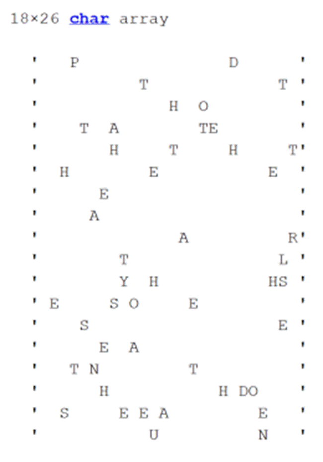
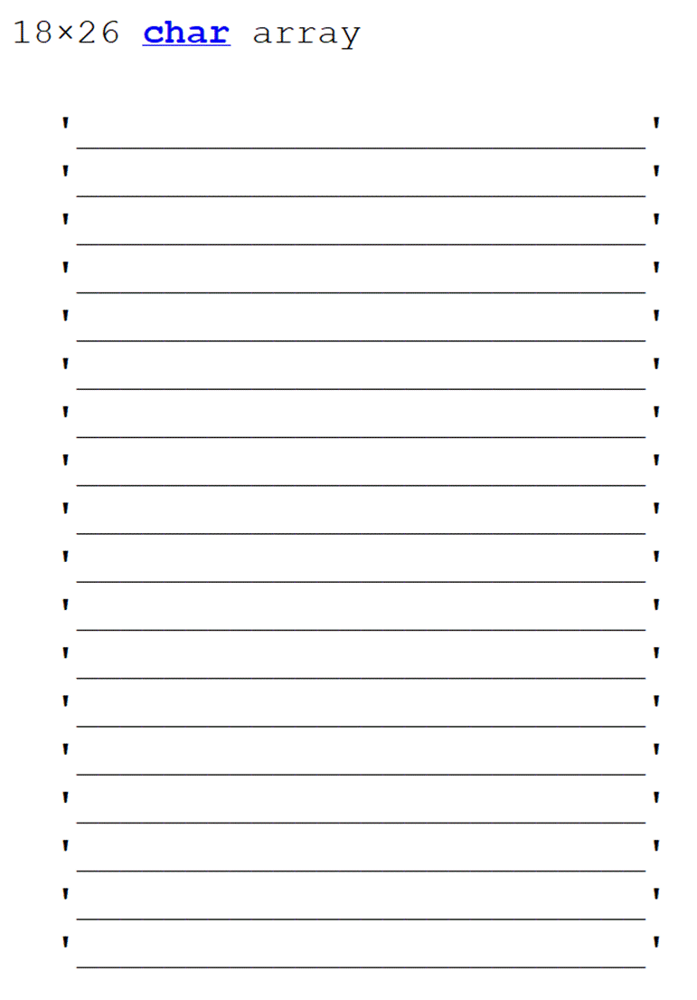
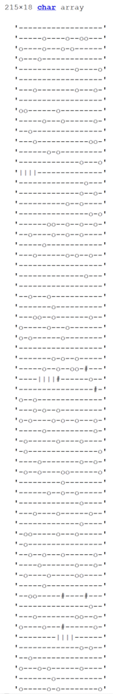
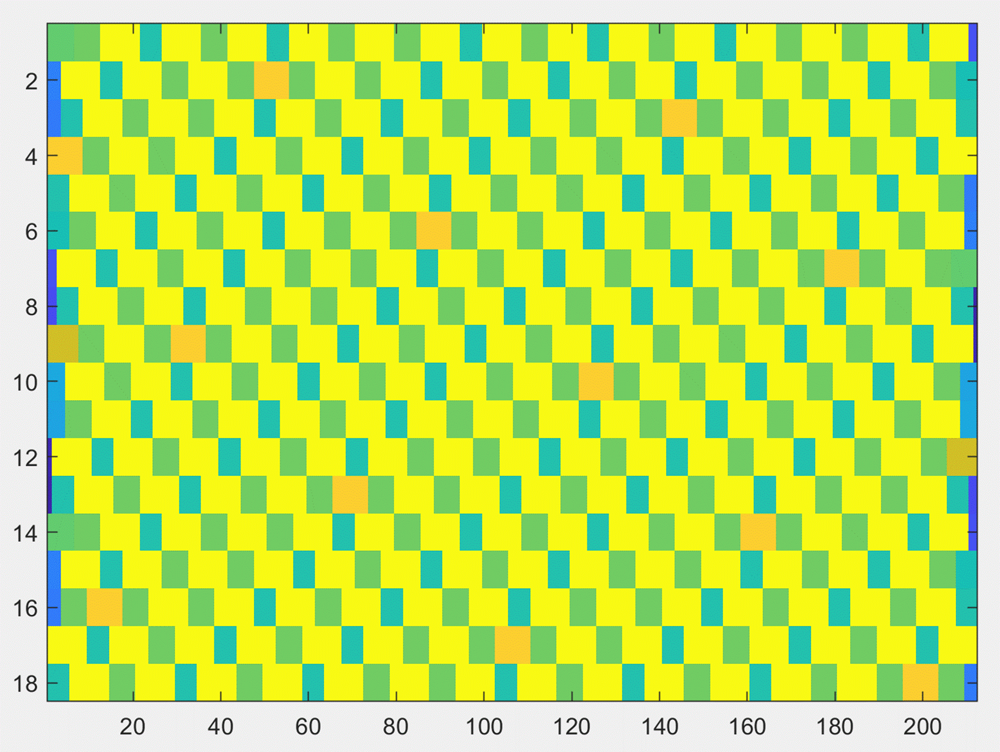

Cracking the Uncrackable Code:
The long version
|
|
|


The
original ciphertext
Background
I was
given this code sometime when I was in graduate school (circa 2002), by my dad,
who was at the time the Chair of Math and Computer Science at Lawrence
Technological University in Southfield, MI. I had recently given a summer
course on basic cryptography to high school students, and my dad had been
approached by someone (a student, I believe) who believed they had developed an
uncrackable code, and had provided my dad with a copy of a text enciphered
with this uncrackable code. He, in turn, provided it to me, asking for my
opinion on it. I was highly skeptical of
the claim, and the first look at the ciphertext suggested to me that it would
not be hard to crack. I saw that spaces,
punctuation, numbers, capitalization all appeared to be preserved in the
ciphertext and these could be quite helpful in deciphering (especially because
word breaks are visible). I wondered if
these might be decoy signals (e.g., perhaps a different plaintext had been used
to supply the pattern of spaces, punctuation, etc.), but this was made less
likely by the obvious repetition of whole words in the ciphertext. Repetition means regularity, and the fact I
could easily see it just by looking through the ciphertext suggested that the
code might even be trivial to crack. So,
I started working on it some in my spare time in graduate school. I had to build my own tools for analysis in
MATLAB, which was slow work, but I made some early progress fairly
quickly. Ill detail this work
below, but the ultimate result was that while I made some progress, I also was
surprised by the failure of the decipherment to just fall into place quickly. I
got far enough to conclude that people more expert than myself and with better
tools would likely have been able to crack it quickly, but that it was going to
take me too much of my time when I needed to be focused on other things. I put it away.
Every
once in a while,
I would remember about it and think that it would be a nice problem to work on,
but I couldnt find it, lost in digital archives somewhere. Then, in 2021, when
I was going though backup CDs which had been in a box in the garage, I found
the original ciphertext as well as some of the code I had written back then,
although I did not find most of my notes or organization and did not record how
far I had gotten. Once rediscovered, I tackled it with gusto, and this time,
though it took many hours, I did crack it. The encipherment scheme is more clever than I initially gave credit for, and there may
be some cleverness I have not caught, but I can now fully decipher and
re-encipher the text using a relatively small set of relatively simple rules.
What follows is my account of how I was ultimately able to crack this
uncrackable code.
To orient
the reader, the structure of this document is as follows: Part 1 has what I can
reconstruct from my initial attempt in 2002. Part 2 presents the process of the
second, ultimately successful attempt in 2021.
Part 3 gives the final descriptions of the encipherment and decipherment
algorithms. Part 4 explores and analyzes some parameter variations for the encipherment
and decipherment algorithms. Part 5 reflects
on some open questions and wraps up. I have tried to include enough background
information that someone with no experience in cryptography would be able to
follow the story, though I am not sure how successful I have been. In any case,
I hope you will enjoy coming along on the journey of cracking this uncrackable
code!
Part 1. First Try:
November
2002
Rochester, NY
1.1 Initial observations
When
first given the ciphertext (the encoded version of the text, as opposed to the
plaintext, the unencoded version), I was surprised to see what looked like a
normal pattern of capitalization, punctuation, and spacing. A common practice
in cryptography is for enciphered texts to have all these features removed,
because they can help give an adversary hints for
decryption. What kind of hints? As a
simple example, English has only two one-letter words, a and I, so if we
see a single letter word, and its capitalized and not at the start of a
sentence, then we can assume that corresponds to a plaintext letter i
with pretty high confidence. Similarly, for a if it is not capitalized.
a and i are the 3rd and 5th most common letters in
typical English; between them they account for approximately 15% of letters.
For a monoalphabetic cipher, where there is a one-to-one mapping beween
plaintext letters and ciphertext letters, this is a pretty good start. Then,
since spaces give us word boundaries, we can use the fact that the is, by
far, the most common three-letter word in English to identify t, h, and
e, which together give us another ~28% of letters. For a monoalphabetic
cipher, filling in over 40% from just these 5 letters would typically make
filling in the rest of the translation pretty easy.
So, if
this were a monoalphabetic cipher, cracking it would be over almost before we
had begun. However, there were two early hints that it wasnt going to be quite
that easy. First, while I did see repetition in the ciphertext, I didnt see
nearly as much as would be expected. I
would have expected there to be dozens of repetitions of the ciphertext
representation of the, and instead I saw many many
different ciphertext three-letter words, some with one or two repetitions, but
none with more than that. Second, the
ciphertext symbol frequencies dont look like typical English (see Figure 1).
|
|
|
Figure 1. Typical letter frequencies in English, sorted from most frequent to least frequent, compared with the frequencies of symbols found in the ciphertext. |


A
simple monoalphabetic cipher can hide the outward appearance of a letter, but
cannot hide the frequency with which it appears, so the ciphertext sorted
frequency histogram should look basically the same as typical English if a
simple monoalphabetic cipher were being used. This is clearly not the case; the
ciphertext symbol frequency is very flat, with all symbols occuring about 1/26th
of the time.
1.2 Hiding letter frequencies in monoalphabetic ciphers
There
are some simple games which can be played to try to hide the frequency
signature while keeping the encipherment and decipherment essentially
monoalphabetic. For example, one could use two different cipher symbols for
plaintext e, which would cut the frequency in half, but then that means
that two other plaintext letters need to be represented by the same ciphertext
symbol (for example, q and z
could be represented by the same symbol, which would now have the frequency of
the sum of the two frequencies of the plain letters). It is also possible to do this with other
higher-frequency plaintext letters to hide their frequency, as well as
combining lower frequency symbols to boost their frequency.
However,
note that the ability to tune frequencies in this way is limited. One can only
divide frequencies by integers (because theres no easy way to represent e
by 2.5 symbols, only 2 symbols or 3 symbols).
Perhaps even more problematic, every time you lump two or more plain
letters into one cipher symbol, you make the ciphertext ambiguous; the
decipherer needs to guess which of the possible options the symbol is supposed
to represent. If a symbol could mean q
or z, it is likely that the decipherer would be able to
correctly guess which was intended nearly all the time, but this becomes less
likely the more letters are combined. Even in the easiest case, where you have
simply lumped the two least frequent letters, q and z,
imagine the case where an encipherer is trying to send a password to their
intended recipient, and the password in plaintext is something like suzqzqrp.
When enciphered, those middle four letters (zqzq) will all be represented by the
same ciphertext symbol. The intended
recipient, even with full knowledge of the encipherment scheme, will not be
able to tell whether the password is suzzzzrp, suqqqqrp,
suqzqzrp, suzqzqrp, suzqqqrp,
suqzqqrp, suqqzqrp, etc. If this recipient has only three tries to
enter this password before being locked out of the account, he is going to be pretty frustrated. The password was obtained by the informant
but obscured by the ambiguous encipherment scheme and unable to be fully
communcated.
The
limitations of message ambiguity mean that one would typically not go too far
down the road of lumping and splitting symbols.
Even if one did go quite far, I think it would be very challenging to
get to a frequency distribution as flat as is seen in this ciphertext. For those reasons, I decided a monoalphabetic
or quasi-monoalphabetic enciphering scheme was unlikely.
1.3 Polyalphabetic ciphers
One
common way to achieve a flatter frequency distribution of ciphertext symbols is
to use a polyalphabetic cipher. A
polyalphabetic cipher uses a cyclical sequence of cipher alphabets to encipher
the plaintext. The first plaintext
letter is enciphered using the first cipher alphabet, then the second plaintext
letter is enciphered using the second cipher alphabet, etc. When you run out of cipher alphabets, you
loop back to the first one and continue from there. For example, if there were
5 cipher alphabets, then every plain letter has five possible representations
in the ciphertext. Likewise, every ciphertext symbol has 5 possible plaintext
meanings. The frequency of that ciphertext symbol is a mix of the frequencies
of those 5 plaintext letters. This will
tend to flatten the frequency distribution of the ciphertext symbols because
there is a lot less variation in the weighted average of 5 plain letter
frequencies than in individual plain letter frequencies. And, unlike in the
quasi-monoalphabetic case, as long as you know the
enciphering alphabets, their sequence, and which one is first, there is no
ambiguity in the message. That is, you know exactly the intended plaintext
letter for every letter in the ciphertext.
The more cipher alphabets there are, the flatter the frequency
distribution will tend to become. If there were 26 cipher alphabets, it would
be trivial to obtain a perfectly flat frequency distribution, with every
plaintext letter equally likely to be represented by any ciphertext letter, and
vice versa.
While
this frequency flattening makes it harder for unintended recipients to crack
polyalphabetic ciphers, there is a significant disadvantage to the use of
polyalphabetic ciphers: there seems to be much more to remember for the
encipherer and decipherer. For a monoalphabetic cipher, one only needs to be
able to generate or remember a single sequence of 26 letters (the cipher alphabet);
for a polyalphabetic cipher, one needs to do this for multiple cipher
alphabets, in order. This is a challenging memory task. For spies (and anyone
else trying to keep a secret), being able to encipher and decipher based only
on things which can be held in memory is a big advantage over requiring
equipment. One common approach for a monoalphabetic cipher is to have a key
phrase which is committed to memory.
The cipher alphabet is then constructed from the key phrase by, for
example, removing all spaces and repeated letters from the phrase, and this set
of letters in this order is the beginning part of the cipher alphabet. The
remainder of the cipher alphabet is then constructed by arranging the set of
letters which did not appear in the key phrase in alphabetical (or reverse
alphabetical order).
|
1.
Example
Key Phrase: night time at
the zoo is quiet 2.
Remove
spaces and duplicate letters: nightmeazosqu 3.
Letters
missing from key phrase: bcdfjklprvwxy 4.
Reverse
missing letters list and add to letters from key phrase: nightmeazosquyxwvrplkjfdcb 5.
Encipher
or decipher using this cipher alphabet
|
||||
|
Figure 2. Example process going from an easily remembered key phrase to a monoalphabetic cipher. |
One
could try to adapt the key phrase approach to a polyalphabetic cipher, but
this would present some challenges. The
more phrases required, the more likely that one or more might be misremembered,
which would lead to garbled message transmission. Another classic approach for
polyalphabetic encryption with very low memory requirements uses the Vigenere square.
1.4 The Vigenere square
|
|
|
Figure 3. The Vigenere Square. |
The Vigenere
Square (see Figure 3) is easily constructed from memory because of its simple
structure. To use it for encipherment and decipherment, one just needs a key
word (or phrase). If we use the example
key word LEMON, then the set of cipher alphabets used would be the rows of
the Vigenere square which start with the letters of the key word. Thus, the first plaintext letter would be
enciphered using the L row (e.g.
plain f would become cipher q, because q
is the intersection of the L row with the f
column), the second plaintext letter would be enciphered using the E
row, the third with the M row, the fourth with the E
row, and the fifth with the N row. Next, the sixth plaintext letter (and the 11th
and the 16th and every fifth letter after that) would be enciphered
using the L row again. The combination of a Vigenere square and a key
word is a Vigenere cipher.
Historically,
Vigenere ciphers were once considered unbreakable unless you could guess the
key. In addition, essentially equivalent ciphers were independently invented a
few times by people who believed they had invented unbreakable codes, so it
would fit historical tradition if this new unbreakable code I was tackling
was basically just a variation or reinvention of the Vigenere.
1.5 Cracking the Vigenere
Fortunately
for me, the Vigenere cipher is not remotely unbreakable, and a general method
of cracking it was worked out and published in the mid-1800s. I basically
followed that method next, but before we go through that, I want to go over why
people considered the Vigenere cipher to be unbreakable. Basically, it is because
all early cryptanalysis (code breaking) approaches fundamentally rely on
frequency analysis, and using Vigenere ciphers can
very effectively hide symbol frequency signatures. Deprived of the only known
tool, potential code breakers despaired.
Ciphertexts
encoded with a Vigenere cipher are not completely devoid of structure,
however. While a given plaintext word is
always represented by the same string of ciphertext letters when using a
monoalphabetic cipher, it can be represented up to N different ways if there are N
cipher alphabets in a polyalphabetic cipher. This means that, if the ciphertext
is long enough, you are likely to see the same plaintext word represented by
the same ciphertext sequence more than once.
For example, if there are 6 instances of the word the
in the plaintext, and it is enciphered with a polyalphabetic cipher with 5
alphabets, there must be at least one repeated representation for it. This must happen because there are only 5
different representations of plain t (one in each cipher alphabet),
and each of the 6 occurrences of the must start in one of the cipher
alphabets, so at least two of them must start in the same alphabet. For
occurrences which start with t in the same cipher alphabet,
the next cipher letter for both must be the representation of h
in the next cipher alphabet. And the
next cipher letter must be the representation of e
in the next cipher alphabet after that. Since the sequence of cipher alphabets
is fixed, if a particular sequence of plaintext letters (such as the)
starts at the same cipher alphabet in two different places in the plaintext,
then their ciphertext representations will match exactly. Note that this is true even if the plaintext
word is longer than the number of cipher alphabets.
The key
to beginning to crack a Vigenere cipher is to locate these repetitions of
character sequences in the ciphertext. The next step is to see how many
characters apart the initial and repetition sequence begin. Since they are enciphered the same, they must
start at the same cipher alphabet, and the interval between them must be an
integer multiple of the total number of cipher alphabets. If you can find
multiple examples of repetitions, the number of cipher alphabets must be a
common factor between each repeat interval. For example, if one repeat has an
interval of 84 characters and another has an interval of 147, we start by
finding the common factors between those two numbers. 84 has prime factors [2, 2, 3, 7] and 147 has
prime factors [3, 7, 7]. In common, they
have [3, 7], which means that the cycle length, the number of cipher alphabets,
must be 3 (unlikely, too short), 7 (plausible), or 21 (long, but perhaps
plausible). If there were another repetition gap found which was 280 (factors
[2, 2, 5, 7]), the only shared factor would be 7, indicating that the number of
cipher alphabets must be 7. At that
moment, we havent deciphered a single letter, but we have unlocked the key
insight to be able to go back to using frequency analysis.
By this
repeat interval factor analysis, we can identify (or at least greatly narrow
down the options for) the number of cipher alphabets. Once we know the number
of cipher alphabets (N), we can assign each location
in the ciphertext to one of the N cipher
alphabets. The key realization is that within each cipher alphabet bucket,
encipherment is monoalphabetic, which means that letter frequencies will
no longer be concealed. If the cipher
was a Vigenere cipher, knowing the plaintext identity of even one ciphertext
letter is enough to determine the whole ciphertext alphabet (because the cipher
alphabet is just the plain alphabet shifted some number of places, so once we
know one mapping, we know the shift, and therefore the whole mapping). So, we could just assume that the most common
ciphertext letter in each cipher alphabet bucket probably represents plaintext
letter e, and we would be able to guess the entire encipherment
scheme. If the frequency of e
was hidden using a monoalphabetic trick, then it is just going to be a little
more work to match things up, but we are back to the frequency analysis realm
where cryptanalysts were used to working.
1.6 Applying repetition interval factor analysis
Therefore,
the next task for the ciphertext we are working on is to find ciphertext
character repeats and do this interval factor analysis. I dont have a good record about how I
started off doing this, but I expect I started with some of the repeats I
noticed visually (see Figure 4 for examples).
I started confidently but began to become somewhat confused. There did not seem to be a common factor
which fit all the spacings (see Table 1).
Repeats which were close together in the text seemed to be a multiple of
18 apart, but longer-range distances were not. To find these distances, I
created a no-spaces, no-punctuation, all-lowercase version of the
ciphertext. I did briefly investigate
whether the differences I was finding might include incrementing the cipher
alphabet on spaces, punctuation, numbers, line breaks, or some subset of those,
but none of that seemed to help, so I mostly investigated the case where the
cipher alphabet only incremented when a letter was enciphered.
I
looked for any kind of pattern I could see in the spacing data or in the
ciphertext for clues. The appearance of
the ciphertext, the letter frequency data, and the appearance of the repeated
words all most pointed towards a polyalphabetic cipher to me, but the lack of
consistent factors in the spacing between repeats meant that there was
something else going on. One possibility was that there was some process that
shifted the frame periodically, jumping forward or backwards in the cycle of
cipher alphabets so that the cycle was not repeated totally consistently all
the way through. If this were the case, then it would be helpful to figure out
where the boundaries were between sections. Then, if we knew what happened at
the boundaries, and the cycling within boundaries was consistent, then we could
again align the ciphertext so that we knew which cipher alphabet was used to
encipher each letter, and could then analyze the
frequency of each symbol within each alphabet.
|
|
|
Figure 4. Repeated words in the ciphertext (a subset). |

Table 1
|
Word |
Difference |
Factors |
|
bei |
36 |
2, 2, 3, 3 |
|
bj ybf |
766 |
2, 383 |
|
drsbwkq |
1906 |
2, 953 |
|
ehl |
18 |
2, 3, 3 |
|
ehl |
732 |
2, 2, 3, 61 |
|
ehl |
748 |
2, 2, 11, 17 |
|
ixb |
2600 |
2, 2, 2, 5,
5, 13 |
|
ixp |
54 |
2, 3, 3, 3 |
|
ixp |
1212 |
2, 2, 3, 101 |
|
jfu |
410 |
2, 5, 41 |
|
knr |
802 |
2, 401 |
|
knr |
1834 |
2, 7, 131 |
|
knr |
2636 |
2, 2, 659 |
|
nxy |
392 |
2, 2, 2, 7, 7 |
|
qefojxd |
1478 |
2, 739 |
|
qtx |
3330 |
2, 3, 3, 5,
37 |
|
tia |
1104 |
2, 2, 2, 2,
3, 23 |
|
tia |
2244 |
2, 2, 3, 11,
17 |
|
wzfz |
2654 |
2, 1327 |
If
there were these occasional frame shifts, then small gaps between repeats would
be more likely to be informative about the cycle length than long gaps, because
frame shifts would throw off assessments of cycle length by factor analysis,
and small gaps would be less likely to contain frame shifts. The shortest
repeat of at least 3 letters had a gap of 18, the next shortest few had gaps of
36, and the next after that had a gap of 54. These are all multiples of 18, and
together suggest that the number of cipher alphabets is most likely 18. All of these numbers
are also multiples of 2, 3, 6, and 9 (the factors of 18), of course, but 2 and
3 are unlikely because if there were only that few alphabets, then we would
expect to see many more repeats. Even
with 6 cipher alphabets, I think I would expect to see more repeats. 9 alphabets seems
plausible, but the evidence for 18 is a bit stronger, because if there were 9
alphabets we would also expect about half of the repeats to be multiples of 9
but not 18 (e.g. 27, 45, 63), and we dont see any of those. Another consideration is that if we were to
assume a cycle of length 18 when the actual cycle length was 9, we could
realize the error fairly easily when alphabet 1 and
alphabet 10 turned out to be the same.
1.7 Characterizing frame shifts
Once I
had reached this point, the provisional hypothesis was that this was a
polyalphabetic cipher with 18 cipher alphabets and with intermittent frame
shifts. The next task was to try to
identify where the frame shifts might be, and what happens at a frame shift. If
we take the word repeats from Table 1, list them in order of increasing gap
size (the Difference column), and add a column for the difference modulo 18,
we get Table 2.
Table 2
|
Word |
Difference |
Factors |
Difference
mod 18 |
|
ehl |
18 |
2, 3, 3 |
0 |
|
bei |
36 |
2, 2, 3, 3 |
0 |
|
ixp |
54 |
2, 3, 3, 3 |
0 |
|
nxy |
392 |
2, 2, 2, 7, 7 |
14 |
|
jfu |
410 |
2, 5, 41 |
14 |
|
ehl |
732 |
2, 2, 3, 61 |
10 |
|
ehl |
748 |
2, 2, 11, 17 |
10 |
|
bj ybf |
766 |
2, 383 |
10 |
|
knr |
802 |
2, 401 |
10 |
|
tia |
1104 |
2, 2, 2, 2,
3, 23 |
6 |
|
ixp |
1212 |
2, 2, 3, 101 |
6 |
|
qefojxd |
1478 |
2, 739 |
2 |
|
knr |
1834 |
2, 7, 131 |
16 |
|
drsbwkq |
1906 |
2, 953 |
16 |
|
tia |
2244 |
2, 2, 3, 11,
17 |
12 |
|
ixb |
2600 |
2, 2, 2, 5,
5, 13 |
8 |
|
knr |
2636 |
2, 2, 659 |
8 |
|
wzfz |
2654 |
2, 1327 |
8 |
|
qtx |
3330 |
2, 3, 3, 5,
37 |
0 |
Here,
we can notice a strikingly regular progression in the modulo 18 differences.
Differences <100 are in frame, differences of about 400 have a modulo 18
difference of 14, differences of about 750-800 have a modulo 18 difference of
10, differences of about 1100-1200 have a modulo 18 difference of 6, and so on,
with increases of about 400 in the differences corresponding to about +14
modulo 18. This supports our provisional
hypothesis. The rough regularity
indicates that frame shift boundaries might occur approximately every 400
enciphered characters, and that what happens at each frame shift is jumping
forward 14 alphabets in the 18 alphabet cycle (which
is of course equivalent to jumping backwards 4 alphabets in the cycle).
1.8 Locating frame shifts
As an
early guess, it makes sense to assume that the frame shifts occur at regular
intervals, and that our task is to identify that interval. 400 might make sense, as a nice round number,
but it might make more sense if the interval was an integer number of cycles, a
multiple of 18. 360 characters would be a nice round number of cycles (20), or
324 would be 18 cycles of 18 letters, but seems a bit short. 378, 396, and 414 are multiples of 18 closer
to 400.
It
seemed harder than I expected to narrow down the boundary locations. One
approach would be to do things like the following: The boundary spacing must be at least as
large as the largest gap which was found to be in the same frame; and the
boundary spacing must be smaller than the smallest gap which contains two frame
shifts. This thinking yields a lower
bound of 90 and and upper bound of 730, which is extremely wide!
Another
approach would be to look at the longest gap, which is 3330 (for qtx)
and appears to represent having crossed 9 frame shift boundaries (to arrive
back into the original frame). This gap must be large
enough to contain at least 8 full boundary-to-boundary frames,
and must not be large enough to contain 10 full frames. Therefore, the
boundary spacing, if uniform, must be less than 417 and greater than 333. These are stronger bounds, but still leave a
lot of wiggle room.
I
remember investigating letter frequencies with the boundaries at different
locations to see if those ended up being clarifying (e.g.
if having boundaries every 360 characters suddenly resolved each of the 18
cipher alphabets into symbol frequencies which looked like English), but did
not find anything clearly helpful there.
I also
remember starting to try to construct islands of known frame by figuring out
the frame references between repeated words.
For example, there are two instances of knr
and ixb occuring near one another.
If we say that ixb starts in cipher alphabet X
and assume that there are no frame shifts in the small gap between ixb
and knr, then we can determine that knr
starts in alphabet X+9 in one place, and in the other.
This suggests that either there is a frame shift in both places or there is a frame shift in neither place. It seems more likely to be neither, in which
case we assume that we have two aligned islands which do not contain frame
shifts. Next, we try to expand one of the islands by looking for another repeat
word which is nearby, and tenatively assign its starting alphabet number
relative to the starting alpabet for ixb, assuming there is no frame
boundary between the island and the new word. Then we look at the other repeats
for that word and try to connect that frame to another close by word. By expanding the network of connections, we
eventually find another repeated pair where we have assigned an alphabet number
by two different paths through the network.
If the assigned alphabet number is the same, then we guess that all of our assumptions of no boundary in the small gaps
along that network of connections were correct.
If they disagree about which alphabet number the word should have, then
we probably crossed a frame boundary one of those times we assumed we didnt, and
we have to regard the assembled network as suspect,
unfortunately without great ability to pinpoint where the problem is. This type
of analysis was difficult to keep track of and very slow.
One
thing I discovered early on was that ixb and ixp
appeared to start in the same cipher alphabet.
This was great in that it meant that most of the second half of the 5th
paragraph (starting with Ao qevxh) could be aligned in a single
island with links to other parts of the ciphertext, but also strongly suggested
that cipher b and cipher p both represent plain e
in the same cipher alphabet (because both ixp and ixb
were almost certainly the in the plaintext). This
suggested that we were dealing with 18 cipher alphabets, each of which might be
complicated by multiple cipher symbols for single plain letters (and therefore
multiple plain letters represented by a single cipher symbol). Furthermore, the
presence of frame shifts meant that deciding that on the cycle length of 18 was
not sufficient to be able to assign all cipher symbols to a corresponding
cipher alphabet; instead there was this painstaking and
potentially error-prone process of assembling aligned islands. Because there
was only a relatively small amount of text in these islands, and
also because there appeared to be a non-1-to-1 mapping between plain
letters and cipher symbols, it was difficult to bring in frequency analysis to
start filling in good guesses for the cipher alphabets.
I did
start building the code to make guesses of cipher letter translations to plain
letters and started by guessing that most of the three letter words with
repeats represented plain the, but this didnt end up getting
me very far. Other guesses I used were that the capitalization pattern Xxxxx
Xxx X, which occurs four times in the ciphertext, represented World War I
(just because I couldnt think of anything else that would match that), that a four digit number which appeared to be a year followed by a
single letter, was an s. I guessed that ixb 1870e jfu 1880c ld kq qtx gfzyi '90h might be the 1870s and 1880s __ to the early 90s, where the missing word might
be up, in or on.
I also
tried rewrapping the no-space, no-punctuation, lowercase ciphertext to rows of
18 letters and tried to see if I could see any evidence of when a changeover
happened. I tried looking at how the
histogram of ciphertext letter frequency changed in a moving window subset of
the text in each cipher alphabet. Both of these approaches
seemed uninformative. It is too much to expect to see clear patterns based on
such a small subset of letters. Even if
we assumed that the first ~375 letters of the text were in the first frame
before the first boundary, that means we only have a sample of 20 to 21
plaintext letters (375/18) in each of the 18 cipher alphabets, which means we
expect to see only to 3 es, 1 to 2 ts
and as, and 0 to 1 of everything else.
With statistical noise, seeing or not seeing a letter in a sample of 20 letters
just doesnt tell you very much.
1.9 The substitution matrix
Using
the data and guesses I could muster, Figure 5 shows the substitution matrix which
is the latest one I have saved from that time, built from all the guesses I had
which didnt seem to cause problems. I
think I ended up deciding that the World War I guess was not strong enough,
especially because I think it seemed like it conflicted with something else,
though I dont remember for sure. You can see that I had guesses for 49/468
cipher letters (~10%) across all 18 cipher alphabets. This might not seem too
bad for a start, but most of them were t, h,
or e, so most ciphertext words which were not the
had zero to one letter translated, which just isnt that helpful for guessing.
|
 |
|
Figure 5. 18x26 substitution matrix. The 18 rows are the cycle of 18 cipher alphabets; the 26 columns are the cipher letters, in alphabetical order. The P in the 4th column of the first row means the ciphertext symbol d, when using the first cipher alphabet, should be translated to plaintext p. |
Interestingly,
one starts to see some patterns in the substitution matrix, even as sparse as
it is. The most noticeable one is the
diagonal descending pattern of t, h,
e. More specifically, if a cipher letter in one alphabet
represents plain t, then the cipher letter three
after it means h in the next cipher alphabet,
and the cipher letter four after that means e in the next cipher alphabet
after that. The fact that this pattern appears multiple times suggests that we
might be dealing with the same cipher alphabet, just with shifts from row to
row. Another pattern is that many rows have two plain es,
and one row (cipher alphabet 17) has three plain es.
Also, multiple rows have two plain ts, and a few have two plain hs.
Two or three es and two ts are unfortunate, but perhaps fairly unsurprising, but I was very surprised to see
instances of two hs. h is a letter whose frequency is
already sort of middle-of-the-pack, and its not clear that much would be
gained by halving it. Furthermore, if
one is doubling the 7th or 8th most frequent letter (and
giving e three representations), that suggests that there might be
17 letters in use to represent the 8 most frequent letters, leaving only 9
remaining letters to represent the other 18.
That seems like a mess to decipher even if you knew the scheme.
Furthermore, the multiple representations makes it
harder to figure out the consensus cipher alphabet, because, if we see an a
three letters after an e in the substitution matrix,
which e is that? And which a? Also, while some rows suggest
that each one cipher alphabet is a shifted version of the others, some rows
seem inconsistent with that. The
inconsistency could be due to a bad guess of a translation of a word, a bad
assignment of frame to an island I thought was oriented correctly (leading to
an incorrect assumption about what cipher alphabet goes where), a
misunderstanding of the whole structure of the code, a typo or mistake by the
original encipherer, a deliberate exception rule (like the frame shift
boundaries) planned by the original encipherer, or something else I hadnt
thought of.
This is
about as far as I made it on my first try.
I did try to construct a consensus cipher alphabet and then rotate it
across the 18 alphabets, but this definitely caused mis-translations
in places and generally did not seem to be correct. I believe I had worked on
this off and on for about a month (perhaps a total of 30 hours or so), and reported back to my dad at Thanksgiving. I reported that I believed that the code
appeared to be a polyalphabetic cipher with 18 cipher alphabets, plus a set of
frame shifts at certain points in the text, which I had not been able to pin
down with any precision. I said that I believed that someone with more time and
more experience would be able to crack it without too much trouble. I couldnt
be sure because I had not succeeded, but it seemed like I had found enough
structure that it would be possible to unravel the rest, especially if I had
better software tools, given more time working on it.
Part 2. Second Try:
May
2021
Seattle, WA
2.1 Restarting
A bit
less than 20 years later, I found the original code plus what I had saved of my
MATLAB investigations on a back-up CD which had been in our garage. I was going
through backing up pictures because Google was ending free photo storage for
newly uploaded photos on June 1, 2021, and I was using that as a nudge to get
old photos backed up for free. This time, I decided, I was going to figure it
out completely. My coding skills had improved significantly, and I could be
open ended about it, since it didnt really matter how long it took to do.
The
first step was to try to get back to roughly where I was in 2002. I looked at the bits of MATLAB code and saved
files to see what I could get out of it.
Unfortunately, not much more than I could remember already: It appeared
that there was a cycle of 18 cipher alphabets and some complication which
shifted the cycle by four alphabets at some, possibly consistent, interval, but
I had not been able to pin down the exact location of these shifts. I decided that I could likely do a better job
of pinning down the shift locations now, and that this is where I should
start.
I
created a few different representations of the raw data and kept track of the
mappings between the indices of text letters in each. The initial representations were:
The
original ciphertext, with spaces, punctuation, numbers, line breaks
A
no-spaces, no-punctuation, no-numbers, no line breaks, lowercase vector of
ciphertext characters (I called the the NSNP version for short)
I
believed the cycling of cipher alphabets happened each time a letter was
enciphered, so this corresponds to each index change in the NSNP
representation. The index into the original ciphertext changes with spaces and
other non-enciphered chararcters, so it is less useful for tracking
regularities in the character sequences with respect to the cipher alphabets.
However, it does contain useful information in that we can see where word
boundaries are in the original ciphertext.
2.2 Repeated words
I began
the analysis by finding all repeated words in the ciphertext. To do this, I made a version of the original
text where all non-letters were replaced by underscores and all uppercase
letters were replaced by their lowercase versions. Then, word start boundaries
can be identified by an underscore followed by a non-underscore, and word end
boundaries can be identified by a non-underscore followed by an underscore.
Once the text is parsed into a list of words, we can find which ones are
unique, and then cycle over each one to find all of its
locations. This analysis found that there were 57 repeated words, 11 of which
were repeated three times, the rest twice. This is far more than I analyzed in
the first try. I chose to start with words because the chance that a repeated
sequence of characters which is a word is a true repeat rather than a
statistical coincidence is much greater, so I feel more comfortable assuming
that even two-character words are more likely real repeats. I would feel much
less confident about two-character sequences in the NSNP representation, as I
would expect that some would show up just by chance, and I wouldnt want to use
those in the repeat analysis. Even one character word repeats seem to me to
have a pretty good chance of being true repeats.
Table 3
|
Three Repetitions |
Two Repetitions (longest to
shortest) |
||||
|
vp tia sm odv ncg knr ixp ixb ehl dx bj |
qefojxd drsbwkq dnhq wzfz xtu xmq xme xae ybf |
vkc qtx qly nxy mwt kzr kzd jfu jfg hrs etl |
dgk bei adh zn wq we um tl tk sc |
oy kq ke ik ic hy hb gy dl dd cu |
bv bb n h |
Next, I
looked at the number of enciphered characters between each repetition, and
since I already suspected a cycle of 18 cipher alphabets, I payed particular
attention to the distance mod 18. If
there were no cipher alphabet shifts, then we would expect all true repeat
distances mod 18 to be 0. However, I already knew from the first try analysis
that it was not quite this simple, and that the periodic shifts seemed to be of
size 4. I tried plotting the distance
between repetitions mod 18 vs the raw distance (Figure 6). Notice that almost all the data points are
grouped into plateaus, and that the plateaus seem to have a regular
spacing. The right panel of Figure 6
shows that the same structure is not present if we put the spacing modulo 16
instead of 18 on the y-axis.
|
|
|
Figure 6. The distance from the start of one repeat of a ciphertext word to the start of the repetition, measured in characters is on the x axis, and the same distance mod 18 is on the y axis. |

The
structure seen in the left panel of Figure 6 suggests 1) that a cycle of 18 is
meaningful, 2) that there seem to be a series of steps of size -4 (the drops
from plateau to plateau where most of the data points are), and 3) that the
interval between steps is approximately 375 characters (the slope of the line
which runs approximately through the centers of the plateaus). This is a lot of information to start from!
Next,
we can take a look at the repeated ciphertext word
data, ordered by distance between repeats, and including the repeat distance
mod 18 (Table 4).
Table 4
|
Ciphertext
Word |
Initial Index |
Repeat Index |
Distance |
Distance mod
18 |
Number of
Steps Apart |
|
'ehl' |
1384 |
1402 |
18 |
0 |
0 |
|
'bei' |
83 |
119 |
36 |
0 |
0 |
|
'dnhq' |
1813 |
1849 |
36 |
0 |
0 |
|
'vp' |
2094 |
2130 |
36 |
0 |
0 |
|
'xae' |
1181 |
1217 |
36 |
0 |
0 |
|
'xtu' |
3444 |
3480 |
36 |
0 |
0 |
|
'ixb' |
2800 |
2854 |
54 |
0 |
0 |
|
'ixp' |
1962 |
2016 |
54 |
0 |
0 |
|
'we' |
1101 |
1191 |
90 |
0 |
0 |
|
wq |
871 |
1049 |
178 |
16 |
? |
|
'odv' |
2320 |
2640 |
320 |
14 |
1 |
|
'dx' |
1930 |
2286 |
356 |
14 |
1 |
|
'sm' |
3073 |
3429 |
356 |
14 |
1 |
|
'kzd' |
782 |
1156 |
374 |
14 |
1 |
|
'nxy' |
1778 |
2170 |
392 |
14 |
1 |
|
'sm' |
2681 |
3073 |
392 |
14 |
1 |
|
'hrs' |
2524 |
2934 |
410 |
14 |
1 |
|
'jfu' |
204 |
614 |
410 |
14 |
1 |
|
'um' |
2606 |
3016 |
410 |
14 |
1 |
|
ik |
2209 |
2698 |
489 |
3 |
? |
|
'hb' |
1224 |
1918 |
694 |
10 |
2 |
|
'gy' |
1772 |
2484 |
712 |
10 |
2 |
|
'xme' |
523 |
1235 |
712 |
10 |
2 |
|
'ehl' |
1402 |
2132 |
730 |
10 |
2 |
|
'xmq' |
221 |
951 |
730 |
10 |
2 |
|
'ehl' |
1384 |
2132 |
748 |
10 |
2 |
|
'sm' |
2681 |
3429 |
748 |
10 |
2 |
|
'bj' |
1114 |
1880 |
766 |
10 |
2 |
|
'ncg' |
177 |
943 |
766 |
10 |
2 |
|
'ybf' |
1116 |
1882 |
766 |
10 |
2 |
|
'etl' |
1920 |
2704 |
784 |
10 |
2 |
|
'knr' |
2080 |
2882 |
802 |
10 |
2 |
|
'mwt' |
1915 |
2717 |
802 |
10 |
2 |
|
'bv' |
2060 |
2880 |
820 |
10 |
2 |
|
'bj' |
64 |
1114 |
1050 |
6 |
3 |
|
'vp' |
2130 |
3198 |
1068 |
6 |
3 |
|
'dgk' |
2269 |
3355 |
1086 |
6 |
3 |
|
'dx' |
2286 |
3390 |
1104 |
6 |
3 |
|
'tia' |
35 |
1139 |
1104 |
6 |
3 |
|
'vp' |
2094 |
3198 |
1104 |
6 |
3 |
|
'kzr' |
2260 |
3382 |
1122 |
6 |
3 |
|
'tia' |
1139 |
2279 |
1140 |
6 |
3 |
|
'ixp' |
2016 |
3174 |
1158 |
6 |
3 |
|
'jfg' |
1078 |
2236 |
1158 |
6 |
3 |
|
'tl' |
463 |
1621 |
1158 |
6 |
3 |
|
'cu' |
2406 |
3582 |
1176 |
6 |
3 |
|
'ixp' |
1962 |
3174 |
1212 |
6 |
3 |
|
n |
52 |
1234 |
1182 |
12 |
6? |
|
'dl' |
2178 |
3620 |
1442 |
2 |
4 |
|
'dx' |
1930 |
3390 |
1460 |
2 |
4 |
|
'qefojxd' |
972 |
2450 |
1478 |
2 |
4 |
|
'kq' |
210 |
1706 |
1496 |
2 |
4 |
|
'sc' |
801 |
2369 |
1568 |
2 |
4 |
|
h |
220 |
1812 |
1592 |
8 |
7? |
|
oy |
1321 |
3003 |
1682 |
8 |
7? |
|
c |
207 |
1906 |
1699 |
7 |
? |
|
'ic' |
91 |
1853 |
1762 |
16 |
5 |
|
'bj' |
64 |
1880 |
1816 |
16 |
5 |
|
'knr' |
246 |
2080 |
1834 |
16 |
5 |
|
'ncg' |
943 |
2813 |
1870 |
16 |
5 |
|
'drsbwkq' |
785 |
2691 |
1906 |
16 |
5 |
|
'vkc' |
1437 |
3343 |
1906 |
16 |
5 |
|
'qly' |
483 |
2443 |
1960 |
16 |
5 |
|
'tia' |
35 |
2279 |
2244 |
12 |
6 |
|
'adh' |
166 |
2428 |
2262 |
12 |
6 |
|
'odv' |
22 |
2320 |
2298 |
12 |
6 |
|
'zn' |
184 |
2482 |
2298 |
12 |
6 |
|
'tk' |
434 |
2980 |
2546 |
8 |
7 |
|
'hy' |
556 |
3120 |
2564 |
8 |
7 |
|
'ixb' |
200 |
2800 |
2600 |
8 |
7 |
|
'odv' |
22 |
2640 |
2618 |
8 |
7 |
|
'dd' |
780 |
3416 |
2636 |
8 |
7 |
|
'knr' |
246 |
2882 |
2636 |
8 |
7 |
|
'ncg' |
177 |
2813 |
2636 |
8 |
7 |
|
'bb' |
198 |
2852 |
2654 |
8 |
7 |
|
'ixb' |
200 |
2854 |
2654 |
8 |
7 |
|
'wzfz' |
444 |
3098 |
2654 |
8 |
7 |
|
'ke' |
673 |
3611 |
2938 |
4 |
8 |
|
'qtx' |
212 |
3542 |
3330 |
0 |
9 |
This
includes the data plotted in Figure 6, but at a more granular level. Looking at
the distance mod 18 column, there is a clear pattern for most of the entries.
Very short repeat distances (<178 characters) mod(18)
are all 0, then distances between 320 and 410, mod 18, are all 14, then distances
which are between 694 and 820, mod 18 are all 10, and so on, in a progression
of -4 characters for windows of distances all the way to the largest distance,
which is 3330, which has gotten all the way back around to being 0. There are a few anomalies (wq,
ik, oy, h,
and c), and it does seem a bit strange that the anomalies mostly
show up near the transitions between shifts, but perhaps these anomalies are
not true repeats. Note that none are
long (three are two letters, and two are only one character). Alternatively,
the fact that they show up between mod 18 changes might indicate that instead
of having a cipher alphabet shift at a fixed point in the text, there might
exist more complex transition zones. I
hoped that wasnt the case, but even if it was, it might not complicate
deciphering very much, because we could still use a consistent reading frame
for all areas outside those transition zones, which might allow us to have an
easier time deciphering within the transiation zone later (because we would
have context around them).
I
decided to discard the anomalies as likely coincidences and focus on trying to
identify the transition locations based on the full set of (non-anomalous)
repetitions. Figure 7 attempts to show
this full set in an examinable way, starting with placing expected boundaries
every 360 characters (because 360 is the nicest spacing (20 full cycles)
which seems close to the apparent spacing). Most, but not all, of these bars
cross the expected number of shift boundaries. More specifically 7 of 73 word repeats do not cross the expected number (enumerated
in Table 5).
|
|
|
Figure 7. Word repeat start locations, ordered by start location, and colored by number of cipher alphabet shifts expected between repeats, with 0=red, 1=green, 2=blue, 3=cyan, 4=magenta, 5=yellow, 6=black, 7=orange, 8=dark maroon, 9=dark green. There are vertical dotted lines every 360 characters, marking one possible set of boundary locations. |

Table 5
|
Word |
Expected Crossings |
Found Crossings |
Notes |
|
nxy |
1 |
2 |
1778 to 2170 crosses
boundaries at 1800 and 2160 |
|
knr |
2 |
3 |
2080 to 2882 crosses
boundaries at 2160, 2520, and 2880 |
|
bv |
2 |
3 |
2060 to 2880 crosses
boundaries at 2160, 2520, and 2880 |
|
jfg |
3 |
4 |
1078 to 2236 crosses 1080,
1440, 1800, 2160 |
|
vkc |
5 |
6 |
1437 to 3343 crosses 1440,
1800, 2160, 2520, 2880, 3240 |
|
knr |
7 |
8 |
246 to 2882 crosses 360, 720,
1080, 1440, 1800, 2160, 2520, 2880 |
|
ke |
8 |
9 |
673 to 3611 crosses 720, 1080,
1440, 1800, 2160, 2520, 2880, 3240, 3600 |
In all
the cases where the number of found crossings differs from the number of
expected crossings, the number of found crossings is one greater than the
number expected. This suggests that
perhaps the interval between boundaries is a bit larger than 360. In many cases there are boundaries fairly close to the locations of the repetitions on one
side, the other side, or both, suggesting that small shifts would be sufficient
to remove one crossing and match the numbers of expected and found
crossings. However, it is also true that
shifting any boundaries by any amount might also create new cases where the
number of expected and found crossings would no longer match.
2.3 Placing bounds on possible boundary spacings
I
decided to try a different approach which would again use all the word
repetition location data to try to place bounds on the interval distance
between shift boundaries. If there is a repetition distance D
which contains N step boundaries, then the interval between step boundaries
can be no larger than D/(N-1), or else N
boundaries would not fit in a gap of size D. Similarly, the interval between step
boundaries can be no smaller than D/(N+1), or else more than N
boundaries would be guaranteed to be in a gap of size D.
Using this logic on all the repetitions, we can narrow the interval down to at
least 333 characters and no more than 416 characters. This doesnt help us very much, because we
already suspect a narrower range than this (somewhere in the 360-280 range
perhaps).
I tried
a few ideas of psychologically meaningful or convenient numbers for boundary
spacings, but none of them worked out perfectly. I tried 360 (nice round number, 20 cycles, is
convenient), 365 (matches number of days in a year), 375 (round number which
seems approximately to be the interval based on Figure 6), and 378 (21 full
cycles of 18). Next, I decided to just try all the reasonably possible step
boundary spacings (I tried the range between 340 and 390) and see if any of
them were consistent with all the repeat word spacings. Figure 8 shows the plot
of the number of problem word spacings vs the step boundary spacing interval. A
problem word spacing is one where the number of expected boundary crossings, based
on the number of apparent -4 cipher alphabet shifts indicated by the mod 18
difference in the distance between repeats, does not match the number of found
crossings for the given step boundary spacing interval.
|
|
|
Figure 8. The number of problematic words (words which cross too many or too few boundaries between repetitions) vs the step boundary spacing. |

Throughout
this range, we dont ever get a boundary spacing interval which has no
problematic words; the best we find is at 367 and 370, where there are only
three problematic words each. However,
we do again see an indication that we are probably in the right general area, since
the number of problematic words rises into the double digits below spacings of
356 and above spacings of 380. What are
the possibilities now? Well, perhaps
there is some mild irregularity in the step boundary spacing (like leap years)
which throws any purely uniform spacing off. Or perhaps the few remaining
problematic words are not true repeats. Or perhaps there is uniform spacing of
step boundaries, but there is an initial offset which shifts where the first
step boundary is. Or, perhaps a combination
of more than one of these.
2.4 Examining problematic words
I
started by examining which words were indentified as problematic in the best
cases. For a step boundary spacing of 367, the problem words include dnhq,
which is a zero-boundary crossing repeat only 36 letters apart. This is pretty strong evidence against a
simple 367 boundary spacing because 1) dnhq is a four-letter word and is
therefore far more unlikely to have occurred by coincidence than a one or two
or even three letter word and 2) because the short repetition distance of only
36 letters with no apparent frame shift in between means that it is extremely
unlikely that there is a step boundary in that short interval. The other minimum is at a step boundary
spacing of 370 characters and is only slightly more promising. It also includes a word repeat (we)
which is a zero-boundary crossing repeat 90 characters apart. Again, perhaps
this could be a coincidence, but since it is a separate word and even appears
in frame with itself, it seems like an unlikely coincidence.
Since
brute force checking of uniform spacing didnt yield a clear choice, I decided
to play around with manually adjusting boundary locations to try to determine
where they could be, and look for the pattern in their
placement after that. Figure 9 shows the first figure of this type I
constructed. The short red bar for repeated word 48 is for dnhq,
and
is 36 characters long.
|
|
|
Figure 9. Bars for word repeats which cross the expected number of step boundaries are colored gray, words which do not are colored red. Step boundaries are shown as vertical dashed lines and are every 365 characters. |

We can see that if that boundary were shifted
slighly to the left, then it would no longer conflict with that repeat, and, as long as it was not moved across the ends of any other
bars, it would cause no new conflicts because it would not change how many
boundaries any other word crosses. In fact, it looks like this approach will
work for all of the problem boundaries: just shift
them a bit to the left so that they are no longer within the problem bar. The
details are:
The
3rd boundary (1095) needs to move back to < 1078 and > 972 (a
shift of -17 to -123)
The
4th boundary (1460) needs to move back to < 1437 and > 1402 (a
shift of -23 to -58)
The
5th boundary (1825) needs to move back to < 1813 and > 1778 ( a shift of -12 to -47)
The
7th boundary (2555) needs to move back to < 2524 and > 2484 (a
shift of -31 to -71)
2.5 Initial offset with regular boundary spacing after that?
Overall,
it appears that a shift of -32 to -47 would work for all of these, which made
me wonder if an offset of all the boundaries by something in this range might
work. An offset of -36 for step
boundaries spaced 365 apart is shown in Figure 10.
|
|
|
Figure 10. Bars for word repeats which cross the expected number of step boundaries are colored gray, words which do not are colored red. Step boundaries are shown as vertical dashed lines and are every 365 characters, starting at 329 (=365-36). |

This almost
works; the only problematic word is nxy, which crosses two boundaries
when it is only supposed to cross one.
The same single problem shows up for all offsets in the range -31 to
-38; while larger or smaller offsets cause more than one problem.
Retaining
the idea of an initial offset followed by uniform spacing, I decided to go back
to trying psychologically appealing/ convenient numbers. Using a spacing of 360 (20 cycles of 18) and
an offset of -36 (two cycles of 18) there number of problematic words rose to
12, so that did not help.
2.6 Fine-tuning the last few problematic frame shift boundary locations
Going
back to a spacing of 365 with an offset of -36, the first nxy
repeat starts at 1778 and the second repeat starts at 2170 (392 apart), while
the step boundaries it crosses are at 1789 and 2154
(by the -4 cycle shift between the repeats, there should only be one step
boundary between them). This suggests that we could solve the problem by moving
the 1789 boundary back 12 letters, or by moving the 2154 boundary forward by 19
letters (16 to get to the repeat, plus three because nxy has three letters, and it wouldnt show up as a repeat if
the boundary was, for example, between the n and the x,
because then the xy in the repeat would have been
encoded by different cipher alphabets than the xy
in the first one). However, simply
adjusting the initial offset to shift all boundaries back 12 more letters (or
forward 19 letters), as already noted, casues more problems than it solves. So,
the next thing I tried was moving ONLY the boundary at 1789 and leaving all
others in place (where they were at a spacing of 365 with an offset of -36). I
chose that boundary to try first because the needed shift was smaller.
However,
another word repeat starts at 1772, and the nxy repeat starts at 1778, so to be
consistent with both words, the fifth boundary needed to be between 1772 and
1778. I chose 1776 to try. This came
back clean. However, I did notice that
the eighth boundary was too close to its repeat (i.e., the boundary was in the
repeat word), so I shifted that one two letters
forward to 2886. This leaves no problems
in the word repeats, though the boundary locations themselves are of course
somewhat suspect. Still, even if we considered that we might be off by 20
characters in either direction on every boundary, we would have correctly
assigned cipher alphabets to 90% of the text ( (365-2*20)/365
= ~90%), which is far better than I had done in my first attempts by trying to
manually build aligned islands of text.
2.7 The oriented (ORI) representation of the ciphertext
Now
that I felt I had a reasonable framework for assigning cipher alphabet number
to all (or nearly all if I wanted to exclude characters near boundaries
due to uncertainty) of the ciphertext letters, I spent some time putting
together the software machinery to automatically produce an oriented version
of the ciphertext (referred to as the ORI representation). In this representation, the ciphertext is
arranged into an array of characters with 18 columns and however many rows are were necessary to hold all the text. Each column holds all
the ciphertext letters which are enciphered using the same one of the 18 cipher
alphabets. Step boundaries can be represented by insertions of four spacer
characters (shifting forward four alphabets is the same as shifting backwards
14 alphabets in the cycle). I constructed arrays linking the index of
characters in the NSNP representation to the oriented representation, and
from the oriented representation back to the original text representation.
This was something that I was able to do this time fairly
easily, but which I had found too difficult to construct in the first
code cracking attempt in Rochester.
Once I
got the index relationships sorted out, one of the verification steps I did was
to ensure that each repeated word was enciphered by the same cipher alphabet
number. That is, if a word with a repeat
started at NSNP index 382 and the ciphertext letter at that index was
enciphered with cipher alphabet 11, and its repeat started at NSNP index 2346,
then the ciphertext letter at NSNP 2346 should also have been enciphered with
cipher alphabet 11. This verification basically just ensures that taking a
round trip from NSNP index to ORI index (which depends on NSNP index and on
boundary locations) back to NSNP index is self-consistent. I made a plot (see
Figure 11) where any repeat words with cipher alphabet misalignments would be
colored red (and correct alignments would be colored gray), which sugggested
that the round trips were succesful.
|
|
|
Figure 11. Bars for word repeats which start with the same cipher alphabet number are colored gray, words which do not would have been colored red. |

2.8 Repeated character sequences
Next, I
decided to take a look at repeated ciphertext
character sequences (not just words) to see whether they might help confirm or
refine boundary locations. Looking at
character sequences discarding spaces and word boundaries might capture some
repetitions which occur within words (like catching the repeated the
in both the and there) or across word boundaries
(like catching -ing th- in doing that and going through). Because it is so much easier for repetitions
of this type to happen by coincidence, I only looked at cases where the
repeated sequence was at least four characters long. There were 59 such
repetitions (a fraction of which were due to words already analyzed above), and
of these 59, 41 (~70%) were consistent with the current provisional boundary
placements, and 18 (~30%) were not. Of those 18, 8 spacings were not even (and
therefore clearly not consistent with the provisional encipherment scheme); I
discarded those as likely spurious. That left 10 more sequences which I looked
at individually. By shifting boundaries
in small increments, it could be possible to fix inconsistencies of one, or
perhaps two, boundary crossings (if one or both ends were close to existing
boundaries), but no more than that. Two
more sequences were off by more than two boundary crossings and were also
discarded as spurious.
After
this winnowing, there were eight repeated four-character ciphertext sequences
remaining which were inconsistent with the existing boundaries, but not
dramatically so (see Table 6).
Table 6
|
Ciphertext Repeated Character
Sequence |
First NSNP Index |
Repetition NSNP Index |
Expected Number of Boundaries
(based on spacing) |
Number of Existing Boundaries
Crossed |
|
xmqo |
221 |
2383 |
4 |
6 |
|
bfon |
487 |
1883 |
2 |
4 |
|
ynhn |
494 |
2602 |
4 |
6 |
|
plvk |
670 |
1946 |
5 |
4 |
|
etwa |
674 |
1102 |
1 |
2 |
|
uhez |
1001 |
2569 |
4 |
5 |
|
uoyj |
1175 |
2837 |
3 |
4 |
|
miet |
2702 |
3688 |
1 |
3 |
Of
these, the first three are off by two boundaries, but it is not the case that
both ends are near existing boundaries, so shifting them slightly will not
help; these were rejected as likely spurious.
For the remaining:
'plvk' looks like it should cross 5
but only crosses 4 of the current boundaries, and is
very close on the starting end (670 vs boundary at 694), but that's the wrong
direction: if we nudged the boundary below 670, then it would only cross 3, not
5, and the other boundary is not close.
'etwa' currently crosses two, but looks like it should only cross one boundary by
spacing. It is quite close to a boundary (674 vs boundary at 694). If that boundary
was nudged back 20 characters, then agreement could be reached (though of
course it would need to be checked if other words were thrown off).
'uhez' currently crosses 5 but looks
like it should only cross 4, and is about 60 letters
from boundaries at both ends (it is at 1001 and 2569, boundaries currently at
1059 and 2519). To cross one less, 2519 would need to move to at least 2573; or
1059 would need to drop to at least 1001. Context for 'uhez'
looks very strong, even though boundary shift seems a bit large.
'uoyj' currently crosses 4 but looks
like it should only cross 3, but the required boundary shift needed seems much
too large.
miet would need two boundaries to
move, and ends are not close enough for this to seem plausible.
Ultimately,
I concluded that, of these, only etwa and uhez
seemed like valid repetitions which could be used to refine existing boundary
locations; all others were rejected as likely spurious. Moving boundary 2 from 694 to 674 fixed etwa
and caused no new problems, and moving boundary 3 from
1059 to 1001 fixed uhez and caused no new problems.
Moving
those boundaries did, however, disturb the regularity of the boundary
placement, and I spent more time trying to find a boundary spacing scheme which
restored some kind of regularity while not violating
any of the existing repeat spacings (i.e., those based on words and based on
character sequences which had not been rejected as spurious). One approach I tried, now that I had a large
set of repetitions that I had some confidence in, was to identify regions in
which I was confident should not have boundaries in them, because they had
zero-boundary repeats within them. Figure 12 shows those regions. The
sparseness of those regions meant that they actually are
not very helpful in constraining boundary spacings.
|
|
|
Figure 12. Bars show regions where boundaries should be absent because there are no-frame-shift repeats. |

2.9 Improving frame shift boundary location regularity?
After
much exploration, I was at least able to find a set of consistent boundary
locations which were at least all multiples of 18 (sensible because the cipher
alphabet shifts which occurred at boundaries would then only happen between whole
cipher alphabet cycles). I also recorded how flexible those locations could be
if moved individually (i.e., with all other boundaries held in place).
Table 7
|
Boundary Number |
Location |
Location/18 |
Notes |
|
1 |
324 |
18 |
18*(15 to 24) works OK |
|
2 |
648 |
36 |
18*(35 to 37) works OK |
|
3 |
990 |
55 |
Only 18*55 works, 56 and 54
cause problems |
|
4 |
1404 |
78 |
18*(78 or 79) works OK |
|
5 |
1764 |
98 |
18*(95 to 98) works OK |
|
6 |
2142 |
119 |
18*(119 or 120) works OK |
|
7 |
2484 |
138 |
18*(139 or 140) cause only one
additional problem |
|
8 |
2898 |
161 |
18*(161 to 163) works OK |
|
9 |
3258 |
181 |
18*(178 to 182) works OK |
|
10 |
3600 |
200 |
Only 18*200 works, though 201
might work if boundary number 2 was moved as well. |
2.10 Concerns about the effects of misplaced frame shift boundaries
I was
still a bit unsatisfied at being unable to discern a clear rule for boundary placement, but decided that it was time to just move forward
and hope that boundary locations might become clearer as I started to decipher
parts of the text. That is, if I had a section of plaintext which seemed well
deciphered but then transitioned to gibberish at a current boundary location,
that would suggest that that boundary is in the wrong place and should be moved
until it no longer triggered gibberish.
However, one of the reasons that I spent so much time trying to pin down
the boundaries better is that if I filled in plaintext guesses for parts of the
ciphertext which I had in the wrong boundary frame, these guesses, even if
correct, would lead to mistranslations in all regions of the ciphertext which
were in the correct boundary frames.
So, I was worried that if I started working on translations without
getting the boundaries right (or at least close to right) I was going to start
to get hopelessly confused, moving the wrong boundaries to try to fix apparent
problems, which would just end up creating new problems later as more was filled
in.
Because
of worries about the effects of misplaced boundaries and possible erroneous
guessed decipherments, I knew I wanted to be able to try, and compare between,
different approaches. To do this, I
needed to be able to create multiple versions of the data and various reference
frames (e.g. different ORI representations based on
different boundary locations). To make this easy, I took the work I had figured
out so far in terms of going from the original ciphertext to NSNP and ORI
representations and keeping track of the index relationships between them, and turned it into a function which generated them
given only the original ciphertext and the set of boundary locations as inputs.
That way, it would be no big deal to try out different boundary locations and
compare side-by-side. In my prior approach, I would go back and edit the code
and re-run to generate a new representation. So, to compare, I would need to
edit the code back and forth, a tedious and error-prone process.
2.11 Cipher symbol frequencies in each cipher alphabet
With the
ciphertext divided into frames within which each ciphertext character could be
assigned to one of the 18 cipher alphabets, it was now possible to look at the
frequency of each symbol in each alphabet. The size of the sample for each cipher
alphabet is limited to approximately 1/18 of the length of the ciphertext, but
this still gave ~200 symbols to tally in each of the 18 alphabets. Figure 13
shows the symbol frequency histograms for each of the cipher alphabets. Compared
with the right panel of Figure 1, where all ciphertext symbols were all of approximately equal frequency, it is clear that the
histograms of Figure 13 show much more meaningful, even English-like,
variation.
|
|
|
Figure 13. Ciphertext symbol frequencies in each of the 18 cipher alphabets. Note that these are no longer flat and instead contain meaningful variation. |
2.12 Multiple symbols for plain e?
One
thing I had noticed when trying to construct the forbidden boundary regions set
(shown in Figure 12) was that the repeated words ixb
and ixp appear to occur in the same cipher alphabet frame; they
both start in cipher alphabet number 2. Each of these ciphertext words occur
three times in the ciphertext, and both appear to represent the plaintext word the. This interpretation is reinforced because
there isnt a pair of very common three-letter English words which share the
same first two letters but have a different third letter. It is more likely that ix
represents th and that both p and b
represent e.
2.13 Limitations of the simple substitution matrix
In my
initial investigations back in Rochester, I had made tools which allowed me to
specify a plaintext sequence of characters and a starting index and convert
that into contributions into a substitution matrix (an 18x26 array which
specified what plaintext letter each of the 26 ciphertext letters corresponded
to in each of the 18 cipher alphabets), and tools which allowed me to apply a
substitution matrix to an oriented ciphertext to get deciphered translations. I
ran into problems, though, when I had substitutions which conflicted with one
another. Using my initial tools, if I provided a new plaintext translation at a
location where there was already a partial translation, the new contribution
overwrote the old contribution. For
example, if I thought in one place that a three letter ciphertext word knr
was the, starting in cipher alphabet number 5, but somewhere else I
thought nxy was the, starting in cipher alphabet 6,
these two disagree about whether ciphertext n in cipher alphabet 6 represents
plain t or plain h. The substitution matrix only has one element
available there: n can be t
or h, but it cant be both. Which was used for translation
depended on which one contributed to the substitution matrix last. Furthermore, while I eventually set it up so
that I could detect when a translation was going to be overwritten by a
contribution, I did not have a mechanism to go back and tie that older
contribution to a particular earlier contribution. For example, in the knr/nxy
case given above, when I tried to add the as a translation for nxy,
I would detect that there was a conflicting interpretation for ciphertext n,
but I would not know that the previous interpretation was due to believing knr
was translated as the. This is a problem, because when I detected
the conflict, I would want to know whether I should trust the new translation
or the old translation more, and to do that I would want to look at the context
around each to decide which seemed more plausible. Also, if I decided that the newer translation
was better, then I would probably want to get rid of the entries for k
and r in cipher alphabets 5 and 7, respectively, in the
substitution matrix because I no longer believed that knr
represented the. Without being
able to link the existing entry for n in cipher alphabet 6 to being
due to knr=the, I couldnt do this. Of course, if some other evidence had caused
me to believe that k in cipher alphabet 5 is plain t,
then I wouldnt want to erase that. The
ideal data structure would allow for chains of causation to tracked and linked
to entries in the substitution matrix, but this was well beyond my coding
ability in 2002. Instead, I had to
manually keep track of a few different versions of the substitution matrix, and
just try to remember or reconstruct what chain of events led to conflicts when
deciding how to resolve them. This time,
I decided to try a more sophisticated approach by keeping track of the set of
locations and translations which went into constructing a substitution
matrix. This would greatly facilitate
any kind of subsequent linkage analysis I wanted to do. Then, I created a function which
automatically constructed a substitution matrix from a table of locations and
translations and an oriented frame.
2.14 Starting guesses for translation
Looking
at the ciphertext, I had noticed the section which read bb ixb 1870e jfu 1880c ld kq qtx gfzyi '90h. If we assume that the numbers
are unenciphered, this really looks like it could read (in
or to) the 1870s and 1880s (up
or on) to the (early
or later) 90s.
In addition, there are a few places with an odd capitalization pattern
of three words in a row: a five letter word, a three
letter word, and a one letter word. Here
are the examples: Nacbo Ipj R, Wjxkx Rys A, and Jwkxk Elf N. I guessed that this might be World War I,
which is later but also reasonably consistent with the numerical dates which
appear (~1870-1890s). Here is the first
set of substitutions based on these interpretations (plus a couple of the
guesses):
Table 8
|
Ciphertext |
Plaintext translation |
NSNP Start Index |
Starting Cipher Alphabet
Number |
|
ixb |
the |
200 |
2 |
|
e |
s |
203 |
5 |
|
jfu |
and |
204 |
6 |
|
c |
s |
207 |
9 |
|
kqqtx |
tothe |
210 |
12 |
|
h |
s |
220 |
4 |
|
wjxkxrysa |
worldwari |
255 |
3 |
|
nacboipjr |
worldwari |
128 |
2 |
|
qtz |
tha |
568 |
14 |
|
xjchbnjehl |
howeverthe |
1377 |
3 |
|
ixp |
the |
1962 |
2 |
|
knr |
the |
2080 |
12 |
|
jwkxkelfn |
worldwari |
1226 |
14 |
And
this is the substitution matrix constructed from just these guesses:
|
 |
|
Figure 14. Initial substitution matrix constructed from the guesses in Table 8. Each row has 26 characters, representing the plaintext translations corresponding to the 26 possible ciphertext letters (in normal alphabet order). There are 18 rows, one for each ciphertext alphabet. For example, the r which is the third character on the fourth row indicates that ciphertext c (the third letter of the regular alphabet) in the fourth cipher alphabet should be translated to a plaintext r. Underscores are shown for unknown substitutions. |
2.15 Substitution matrix regularities
This
matrix is obviously only very sparsely filled in, but there are some
interesting regularities which are apparent. Most obvious is the diagonal
string of filled in characters in the lower half of the matrix. Starting in
cipher alphabet 10, there is a t, and then one cipher alphabet
down and three characters later there is an h, and finally one cipher
alphabet down from that and four characters later there is an e. The same pattern repeats in cipher alphabets
12-14, just shifted rightward 6 characters from where it is in cipher alphabets
10-12. And again in cipher alphabets 14-16, again
shifted rightward 6 characters from where it is in 12-14. This is very interesting,
and suggests that perhaps all of the cipher alphabets are just shifted
versions of each other in some sort of regular progression. If true, this is a big breakthrough because
we can use information learned in one alphabet to help fill in all the
others. I set about trying to construct
a consensus cipher alphabet by looking at relationships between letters in each
of the cipher alphabets. For example, we
see wh in cipher alphabet 3, and lw_s in cipher alphabet 5. If we put these together, we would guess that
the consensus cipher alphabet has a section which is lwhs. Following this assembly process across all
the alphabets, I came up with this as the consensus cipher alphabet: 'er_________vitenalwhsdo___. Because there were two es in the cipher alphabet (see
alphabet 4), I had to be careful about using es as location references.
Before
we go further with the consensus alphabet, lets take a look
at what simply applying this substitution matrix gives us across the whole text
(see Figure 15).
|
 |
|
|
|
Figure 15. Translation interlaced with original ciphertext, based on initial substitution matrix. Each translated line is shown above the corresponding line of ciphertext, with unknown translations represented as underscores. |
||


Here we
can see how sparse the translation is so far; it is mostly underscores, meaning
unknown translation. There are a few places where we might be able to guess new
words, but there are also a few places where the translation seems likely
wrong. As an example of the former, the ixpwi
at the top of the third column seems likely to be there
or these. As an example of the latter, the shl
on the fourth ciphertext line of the third column is translated as the non-word
rhe. If we had to figure out each cipher alphabet independently,
we would need to slowly build up and refine the substitution matrix in this
fashion. We also need to keep in mind
that problems might be caused by incorrect boundary locations rather than being
due to incorrect local translations, which just makes everything a bit more
complicated.
2.16 Trying a consensus cipher alphabet
However,
we can proceed much more quickly if all the cipher alphabets are shifted
versions of a single consensus cipher alphabet, because we can fill in much
more of the substitution matrix. Before we apply it willy-nilly, however, it
makes sense to see how consistent the consensus cipher alphabet is with each of
the existing cipher alphabets. A quick
analysis reveals that the consensus alphabet conflicts only with one letter
each in only two of the cipher alphabets.
Cipher alphabet 5 has an r where the consensus alphabet
expects a t, and cipher alphabet 10 has an i
where the consensus alphabet has an e. This is not too bad. Perhaps there are a few variations just to throw
off the decipherer, or perhaps there are some cases where a single ciphertext
symbol can be translated to more than one plaintext letter, or perhaps there is
an incorrect translation on my short list of guesses. Regardless, it seemed like it made sense to
just try applying the consensus alphabet everywhere and see how it came out.
|
|
|
Figure 16. Consensus substitution matrix. |
|
 |
|
Figure 17. Original ciphertext side by side with view of translated ciphertext based on consensus substitution matrix. The translated version display has a few new features. Spaces are represented as forward slashes (/) to clearly show word boundaries, and the cipher alphabet shift boundary locations are also shown, delineated by a pair of pound signs (#). Within the pound sign pair, the number of the boundary is given, followed by the NSNP index associated with that location in parentheses. For example, #7(2574)# indicates that the 7th boundary location is at that point in the text, which also corresponds with the NSNP index 2574. |
Again,
the results (seen in Figure 17) are interesting. The translated text is partially readable in
places, but also frequently garbled.
Contrary to one of my hopes, the garbled areas do not seem to be
concentrated near the 10 cipher alphabet shift boundaries, but rather seem to
be spread around the whole text. Likewise, one can see sensible words also
spread sparsely around the whole text. It was hard to decide what to make of
this. There were striking examples of words filled in which were undeciphered
before, such as later in the second from the last line of the first
paragraph. This kind of order from chaos
suggested that something was right about what I was doing. There were
also things that looked near misses, such as /thete/ate/, which looks like it would
correctly be translated as /there/are/, but that the two plaintext rs had been mistranslated into ts
instead. Or Thoweh (first word in second to last
paragraph), which looks like it should be Though, but the location which should
be u had been mistranslated to w instead. Finally, there were
also examples which were fully filled in, but did not appear to to be similar to real words at all, like /sninir/
(in the first line of the sixth paragraph).
2.17 Expanding the list of translations
Im not
entirely clear on how I proceeded next. I believe I may have decided that the
translated text based on the consensus alphabets was just too garbled to try to
keep building from, or I may have used it to get ideas for translations where
it seemed to have sensible words. Either
way, I definitely started to try to expand on the list
of translations I had. This was
difficult going at first, and I definitely ran into conflicts
between translations. For example, a translation of a ciphertext d
in cipher alphabet 4 in one place might appear to correspond to a plaintext r,
and in another place correspond to a plaintext t.
As noted before, these cant be simultaneously stored
in a single substitution matrix, so whichever is chosen to be applied to the matrix
last would lead to a mistranslation in the other place. Gradually, I built up the list of
translations I was working from. Once I had a decent list of translated words
or phrases, I definitely discarded the consensus
alphabet (if I hadnt earlier), as I felt that it was better to build on
translations that I thought were correct rather than onto a theoretical
construct which I knew led to garbled translations.
As I
worked on this, I had developed the side-by-side view of the original ciphertext and the translated plaintext as shown in Figure 17. I added notations for the boundary locations
and transferred the capitalization patterns and line breaks into the translated
version so that it was easy to identify corresponding text. I had thoughts of developing an interactive
GUI where I could enter translation text interactively and have it update
translations elsewhere, but this always seemed like too much work compared to
the more manual process I was able to use.
This process was to
1.
Examine
the side-by-side view of with the current translation and identify a new word
or phrase I had a translation guess for,
2.
Find
the corresponding ciphertext character sequence by looking at the left panel
3.
Use
a search tool and index converter tool to identify the NSNP index of the start
of the translation
4.
Add
the NSNP start index and the translated text to the list of translations
5.
Generate
a new substitution matrix from the list of translations and use that to update
the side-by-side figure, and
6.
Start
over at step 1.
This process
ended up being very effective, and I started to make real progress on figuring
out the plaintext.
2.18 Conflicting translations
However,
I did keep running into cases where there were conflicting symbol translations.
As these accumulated, I began to find it confusing to look only at the most
recently updated translation, and a few times I tried to correct a
mistranslation that I had already corrected once before, but a later change
overwrote that correction. This is obviously wasted work.
To
avoid that problem, I realized that it would be helpful to have a third
representation shown, one where I included only the gold standard translations
(rather than the application of the substitution matrix). That way, I could see all areas where I was
specifying the translation, and by looking at the differences between the gold
standard text and the translation text derived from the substitution matrix,
see where the current substitution matrix was causing problems, as well as
where things looked correct but had not been transferred to the gold standard
text yet. This side-by-side-by-side view
and approach was also very helpful, and with it, I was able to, bit by bit,
fill in nearly all of the gold standard
plaintext. I did not record the time
evolution of the set of translation substitutions or the gold standard
plaintext, unfortunately, so I dont have partial translations and gold
standard examples to show in figures.
2.19 The 2-letter-place shift
As I
was working through the translation, I noticed that very often when there were
errors in the translated version vs the gold standard, the erroneous plaintext
letters were shifted by two places in the alphabet from the gold standard
plaintext. For example, if the true
plaintext letter according to the gold standard was t,
but it was mistranslated in the middle pane, the mistranslations were almost
always either r (two letters before t)
or v (two letters after t). Once I realized this, I took
advanatage of it to help guess difficult translations. For example, there is an unusual phrase in
the fourth paragraph, where my gold standard translation looked like Instead of the happy-go-lucky, ___-___ - ___-_____ - and
no tomorrow attitude,
the substitution matrix based translation of the
underscores was big-naw bie-druli. This seems tricky to make sense of. However, knowing that the true letters were
likely the given ones or +2 or -2 letters from the given ones, for tricky cases
like this I could write out the options for each letter and then choose the
combinations which made reasonable words. In this case, I came up with big-pay big-drunk as the only somewhat sensible option. Figure 18 has another example
|
|
|
Figure 18. Example of how to use possible two-letter shifts to figure out a real word from a mistranslated word generated by the substitution matrix. In this case, translation using the substitution matrix yields dtsfigta, apparent gibberish. The gold standard context text around this was We feel this has been accomplished in the material presented and feel that the excitement, the tragedy, and the ________ are all preserved in . I did not have a good guess from the context what the missing word might be, and dtsfigta was not a very helpful possible translation on its own. However, by considering that each of these letters might be replaced by the letter two before or two after it, we see that this word might be drudgery, which fits nicely into the sentence. |
2.20 Finding the source
Following
these approaches, I was able to decipher nearly all of
the plaintext. The text appeared to be
the introduction to an oral history of logging culture in Michigan. I was able
to figure out some of the sticking points and unfamiliar terms by searching
about on the internet for information about Michigan logging history. For example, this helped me identify
cross-cut saws, logging tongs, gang saws, river hogs, and Benzie
County. Eventually I was able to
identify the likely source of the plaintext, A history of logging in Benzie
County, Michigan by William Roy Overlease and Edith Overlease. This book is out of print but is listed on Amazon
(https://www.amazon.com/history-logging-Benzie-County-Michigan/dp/B0007AGOGW). The authors appear to have donated their
source material to Michigan State University (https://archive.lib.msu.edu/uahc/FindingAids/100.html), and you can actually listen
to a number of their recorded interviews here: https://www.benzonialibrary.org/benzie-county-logging-tapes.html.
One of
the last things I figured out was Edith Overleases middle name. Searching the
internet, her middle name was typically omitted, but I did find one place which
confirmed that her middle initial was D. The substitution matrix translation of
it was daoopd. Using the +/- 2
letter approach, I eventually guessed it was Dymond, and when I included this in a Google
search, I was able to confirm that it was correct (https://shimercollege.fandom.com/wiki/Edith_Overlease).
2.21 Fully deciphered, but not done yet?!
Once I
had completed the gold standard translation, I was left in an interesting
position. I was confident that I had correctly deciphered the plaintext, but I
had done so without fully understanding the encipherment or decipherment
scheme. The substitution matrix that I had been using and updating was clearly
helpful in figuring out the plaintext, but on its own, it produced garbled
plaintext, so there must be some additional complication in the encipherment/decipherment
scheme. Figure 19 shows the state once the gold standard plaintext had been
completely figured out (this is also your chance to read the text in its
entirety!).
|
|
|
Figure 19. After gold standard text was completely determined (right panel), the substitution matrix based translation (middle panel) still had many, many mistranslations, suggesting that something was missing in the simple substitution matrix approach. |

2.22 Layering the substitution matrix
I was
puzzled and trying to think about what could be going on as I worked on filling
in the gold standard text, and I had a few ideas, but the ultimate translation
was going so well that I decided to finish the gold standard translation first,
and then use that as a tool to try to better figure out how the mapping between
the ciphertext and the plaintext was constructed. Now that I had finished, it
was time to carry out that plan.
The
initial approaches I tried were to construct layered substitution matrices. Starting from the gold standard plaintext, I
would build a substitution matrix based on going character by character through
the plaintext, ciphertext, and assigned cipher alphabet. However, when the next
character conflicted with an existing entry in the substitution matrix, instead
of overwriting the substitution matrix entry, I would add it to a third
dimension. For example, if the 18x26
substitution matrix had an e in the (4, 2) position (fourth cipher
alphabet, substituting e for ciphertext b)
because there was a plaintext e and a ciphertext b
at some location identified as cipher alphabet 4, but now at some later
location identified as also cipher alphabet 4 and with a ciphertext b
the gold standard plaintext is g rather than e, then we
expand the substitution matrix to be 18x26x2, and the (4, 2, 1) element remains
e and the (4, 2, 2) element is filled in as g.
Later, if ciphertext b in cipher alphabet 4 represents
another plaintext letter, we would add a third layer to the substitution
array. Running through this for the
whole text, we find that we require at most three layers of substitutions (see
Figure 20).
|
|
|
|
|
Figure 20. A multi-layer substitution matrix built from the gold standard plaintext, the ciphertext, and the assignment of cipher alphabet numbers. |
||


Looking
at the results verifies again that it seems very unlikely that we are dealing
with a single, two-dimensional, substitution matrix, since a huge fraction (67%)
of the ciphertext letters across all 18 cipher alphabets have at least two
plaintext translations.
One
possibility I considered was that there could be 36, or even 72 cipher
alphabets instead of 18, with the devious complication that those which are 18
apart are similar enough to make it look like there are only 18 in the
repetition analysis. A quick analysis
shows that trying this doesnt really help, as >50% of the letters across
all 36 cipher alphabets and >25% of the letters across all 72 cipher
alphabets still have more than one plaintext translation, even though there are
twice or four times as many slots in each layer of the substitution matrix. One possible explanation for this layering of
the substitution matrix could be poor boundary placement.
2.23 Confusion about frame shift boundaries
However,
I could not shake the idea that somehow something might be not quite right
about boundary positions, or that there was something else odd going on. I felt like boundary locations, as I
conceived them, ought to be fairly obvious, especially
now that I had the full plain text. For
example, if I had misplaced the first boundary, there should be no
contradictions when building the substitution matrix from the gold plaintext
and the ciphertext until either 1) the first boundary was hit too early,
whereupon every character after that up until the correct boundary location
should conflict with the correct substitution matrix, and then, once the
correct boundary location was reached, there should again be no conflicts with
the correct substitution matrix, or 2) the first boundary was placed too late,
whereupon every character from the correct boundary location up until the
too-late boundary placement should cause conflicts, but before and after this
region, there should be no conflicts with the correct substitution matrix.
Either way, it should be easy to see where the conflicts start and stop and
move the boundary until these conflicts are eliminated. However, this didnt seem to be how things
were working out. Conflicts seemed
scattered about the text rather than focused in
contiguous regions as I would have expected.
One way
I investigated this was to look for the first contradiction based on the gold
plaintext and the first layer of the substitution matrix. The first contradiction occurs only 80
characters into the text (where gold activity is deciphered as activita),
with another contradiction at 101 characters (where gold continuing
is deciphered as eontinuing). These are both far earlier than I expected to
see the first boundary (based on boundaries being about 375 characters apart),
so this undermines the idea that perhaps poor boundary placement is the reason
for substitutions matrices requiring multiple layers.
In
additon, I had noticed while translating that the plaintext word experience
was very close to what I believed was the the second boundary location, about
770 characters into the text. I decided to see what happened if I moved the
boundary to either side of the word experience. Either way, the
ciphertext version is flmuqyjvdy. If we place boundary #2 at character 756,
before experience, then the initial cipher
alphabet is number 14, where cipher f is plaintext e. If we place boundary #2 at character 774,
after experience, then the intitial cipher
alphabet is 10, where cipher f was also plaintext e! The rest of the cipher alphabets did not
match. Yet, somehow, as we moved to cipher alphabet 11 and 15 for the next
letter (the x) in experience, they were both consistent with
a plaintext x (though x is rare enough that this occurrence
would probably be the only appearance of plain x
in either cipher alphabet). Moving to cipher alphabet 12 and 16 for the p
in experience, the first layer substitution based on cipher m
in alphabet 12 is plain r and the first layer
substitution in alphabet 16 is plain n. Neither of these is correct (the right answer
is plain p), but you might notice that in each case, the proposed
substitution is two letters away from the correct answer, and therefore, by my
decipherment guessing rules above (where you are allowed to guess plaintext
letters two away from the original decipherment) both alphabet 12 and 16 would
be equally consistent with the gold standard plaintext. Amazingly, things
continued in this way throughout the whole word; no matter which side of experience
the frame shift boundary was on, the plaintext experience
was interpretable from the ciphertext decipherment as long as
+2 and -2 letter shifts were allowed.
On one
hand, this was an exciting discovery: there seemed to be some sort of pattern
in the cipher alphabets which meant that alphabets four cipher alphabets apart
were closely related in some way. On the
other hand, it was sort of hard to imagine what kind of relationship would allow
for this, or, conversely, what kind of construction process for cipher
alphabets would lead to this effect. In
any case, this did seem like it might explain why boundary shifts were so much
harder to pin down that I imagined; shifting by four cipher alphabets had a far
subtler effect than I thought. Instead of producing gibberish if misplaced, it
instead produced more or less intelligible changes,
hiding the transition.
2.24 Substitution matrix layer shifts
I was
also quite intrigued by this phenomenon where deciphered letters were often +2
or -2 letters from what I believe the true plaintext letter was. I tried to
think about what kind of scheme could lead to this, and
considered that perhaps a first encipherment step was to sometimes add or
subtract two letter places to the plaintext letter, and then run that possibly
altered letter through a cipher alphabet encipherment. Perhaps there were some
rules or pattern to determine when you added, subtracted, or left
unchanged. As a first attempt at
investigating this, I decided to consider the first plaintext translation as
the base one and look for any patterns in the shifts away from this
base. That is, if the first occurrence
of cipher b in cipher alphabet 1 corresponds to a plain f
in the gold standard plaintext, and the second occurrence of cipher b
in cipher alphabet 1 corresponds to a plain h in the gold standard plaintext,
then cipher b in cipher alphabet
would get marked with a +2 because the second occurrence translation was
shifted by +2 letters (from f to h). Doing this for the whole substitution matrix,
we can see the results shown in Figure 21, where the shifts have been
translated into one-character symbols so that they will fit into a nice regular
character array for visual inspection.
|
|
|
Figure 21. Comparison of the second translation of each cipher letter in each cipher alphabet with the first translation. Symbols: - means second translation was two letters before the first translation (e.g. e to c); + means second translation was two letters after the first translation (e.g. e to g); = means second translation was four letters before the first translation (e.g. e to a); 4 means second translation was four letters after the first translation (e.g. e to i); (space) means that either there was no change from first to second translation, that there was only one translation, or that there were no translations. |
The
first thing I noticed is that all shifts are a small multiple of two (-2, -1,
0, 1, or 2 times 2); there are no odd shifts. Secondly, most of the shifts are
either +2 or -2; shifts of 4 or -4 are much rarer. Lastly, I didnt see any
kind of visual pattern as to where these shifts were occurring or to the
direction of the shifts. I decided this
avenue wasnt immediately bearing fruit in terms of finding a pattern to the
shifts and shifted to thinking about the structure of the cipher alphabets.
2.25 Multilayer cipher alphabet periodicity
Returning
to the 3D substitution matrix, I decided to investigate more systematically
some of the apparent periodicity I saw there within a cipher alphabet. I
noticed that if an alphabet had plain e as one of its translations for
a cipher letter, then it often had plain e as one of the translations for
the cipher letter +12 letters away. For
example, cipher alphabet 1 has plain e as a translation for cipher a,
and also for cipher m, and m
is 12 letters after a. On other layers of the 3D
substitution matrix, cipher a also is translated as plain c
and cipher m is also translated as plain g
(see Figure 22).
|
|||||||||||||||||||||||||||||||||||||||||||||||||||||||||||||||||||||||||||||||||
|
Figure 22. Left panel: example of multi-layer substitution matrix for cipher alphabet #1. For example, the first colum indicates that ciphertext a in this cipher alphabet is sometimes translated as plaintext e and is sometimes translated as plaintext c. Likewise, ciphertext z is sometimes translated as plain r and sometimes as plain t. Ciphertext j apparently never appears in cipher alphabet #1 anywhere in the ciphertext, so we dont know what its translations would be if it did appear. Ciphertext d is only translated as plain l, so we dont know what its second layer translation would be, or whether it has one. |
For
ciphertext b, notice that one of its translations is plain p,
which also appears 12 letters later as a possible translation for ciphertext n.
And again for cipher c,
translation a also appears 12 letters later for cipher o. How often does this occur through all of the cipher alphabets? Very often. See the results in Figure 23, where a +
means that one of the translations for that cipher letter also appears as one
of the translations for the letter 12 letters later in the same cipher
alphabet.
|
|
|
Figure 23. Shared representation +12 letters away in the same cipher alphabet. |

Perhaps
incredibly, the same type of coincidence occurs for shifts of 14 letters (see
Figure 24)!
|
|
|
Figure 24. Shared
representation +14 letters away in the same cipher alphabet. |

Lest it
appear that this might somehow happen for other shifts Figure 25 demonstrates
that it never happens for ciphertext letters 13 or 16 letters apart, and happens only rarely for ciphertext letters 2
letters apart.
|
|
|
|
|
Figure 25. Shared representation +13 (left), +16 (middle), or +2 (right) letters away in the same cipher alphabet. |
||


But
what could it mean that the translation for nearly every letter position in
every cipher alphabet is partially repeated both 12 and 14 letters later? Conceptually, this even seems
self-inconsistent, because, for example, if a letter is repeated 12 letters
later, and then 12 letters later again, it is also repeated 2 letters earlier
(relative to the original position, because forward 24 is the same as backwards
2). Similarly, if the same letter is repeated both 12 and 14 letters later,
then it is repeated 2 letters later (because thats the relationship between
the +12 and +14 locations). Something must give here, because the +2 shift
(shown in right panel of Figure 25) is far less common than the +12 and +14
shifts. The explanation must be that
different translations are repeated +12 and +14 letters apart. For example, in Figure 22, you can see that
ciphertext a can be translated as either e or
c, and e is repeated +12 letters later,
while c is repeated +14 letters later. Likewise, for ciphertext b,
the two translations are n and p,
which are repeated +14 and +12 letters later (respectively).
2.26 Letter translation parity consistency
As I
was thinking about the implications of the shifts, one easy consequence of
having only even shifts is that the parity of letters is always preserved. That is, if a letter represented by an odd
numbered ciphertext letter, then it is always represented by an odd-numbered
ciphertext letter. Likewise for letters represented by even numbered ciphertext
letters; they must always be represented by even numbered ciphertext
letters. I did a quick check on whether
this was universally true in the 3D substitution matrix, and
identified exactly one place were it seemed not to be true, which I determined
to be a typo. Once fixed, there were no
contradictions to this general rule.
2.27 Possibly misplaced boundaries
Returning
to the 3D substitution matrix (shown in Figure 20), I had noticed that some
cipher alphabets had only two layers (for example, cipher alphabet #1, shown in
Figure 22 has only two layers), whereas others had three layers, though the
third layer was typically pretty sparse. It seemed like it might make more sense if
all the cipher alphabets really only had two layers,
and that perhaps the third layer was due to misplaced boundary locations. In case it is not clear, I was frequently
obsessed with establishing the correct boundary locations. This is because if I could feel confident
that the boundaries were in the right places, it would simplify the rest of the
analysis, because possibly misplaced boundaries was a recurring possible
explanation for any kind of anomaly I was seeing.
So,
taking as my hypothesis that each enciphering alphabet (the inverse of the
deciphering alphabets that I have been referring to so far as cipher
alphabets) should only have two layers of translations for each plaintext
letter, I decided to examine where in the text there seemed to be requirements
for introduction of a third layer. In order to do that, I examined everywhere that the gold
standard plaintext indicated there should be a plain e and
found what ciphertext letters were used to represent it in each cipher
alphabet. I then counted how many times each ciphertext letter was used as the
translation for e and decided that the most
frequent two within each cipher alphabet should be provisionally considered
correct, and that any other less frequent ciphertext letters should be
considered oddities. I had decided to work from the
plaintext side instead of the ciphertext side because the plaintext doesnt
change depending on how you assign the ciphertext alphabets, but the the
expected ciphertext would. In addition,
I decided to examine the distribution of oddities in the ORI representation
(where each column represents one cipher alphabet) because I thought this would
be the easiest way to see patterns within and across cipher alphabets and in
relation to boundary placement. Because
the ORI representation has 215 rows, its inconvenient to show the full text in
figures, but the left panel of Figure 26 shows the first ~1/3 of the text with
oddity locations marked with #, non-oddity locations marked
with o, boundary locations marked with ||||,
and other locations (where there wasnt a plaintext e
with -)
|
|
|
|
Figure 26. Left panel: Locations of plaintext e in ORI representation, with locations where e appears with one of the two most frequent ciphertext letter translations marked with o, and oddities, places where it is replaced by less frequent ciphertext letter translations, marked with #. Boundary locations appear as |||| since a shift of four cipher alphabets occurs at boundaries. Locations where there is no plaintext e are marked with a placeholder -. Right panel: Similar to left, except that instead of just plain e, typical and oddity locations are shown for plain e, t, a, i, o, and n. Typical translations are shown as o, oddities are shown as #, boundaries are |||| and other plain letters locations are shown as spaces (because there are enough o symbols to get a sense of the grid and its a bit easier to pick out the other elements visually without the dashes). Note that oddities do seem to be clustered near boundaries. |
|


There
are only a few oddites for plain e, but they do seem to be
relateively close to boundary locations, which is somewhat encouraging. I decided to do the same analysis for the
other common plaintext letters t, a,
i', o, and n,
and combined the information (Figure 26, right panel). I wanted to stick to common letters because
uncommon letters are unlikely to end up with several appearances in each cipher
alphabet, and I was relying on the idea that the two most common translations
could be identified as separate from the other translations, which is unlikely
to happen for rarer letters. The results show a definite clustering of
oddities near boundary locations, though they are always intermixed with
non-odditites. By trying out shifting
the boundary locations, I observed that sometimes boundary shifts fixed
oddities without converting non-oddities into oddities. This indicated that shifting by four cipher
alphabets (the effect of the boundary shift) often left translations within the
top two most frequent even though it moved to a different cipher alphabet, and
even though the plaintext and the ciphertext are unchanging. However, the fact
that oddities were sometimes fixed by these shifts also indicated that the
two most frequent translations cant always be the same for cipher alphabets
four cipher alphabets apart, because symbols sometimes moved from being not
frequent enough to be in the top two to being in the top two. I also observed other cases where non-oddites
became oddities due to a boundary shift.
In general, it was not possible to find boundary locations which led to
zero oddities (which was my original hope), only possible to reduce the balance
of oddities by shifting in one direction or the other.
I
decided it was worth investigating specific cases to understand how exactly it
was that shifting a boundary to either side left a non-oddity as a non-oddity
despite the shift in cipher alphabet numbers. An example I looked at was to
compare cipher alphabet #7 and #11.
Ciphertext f in alphabet #7 translates to
either n or l, whereas in alphabet #11 it translates
to either p or n. These overlap at n,
so that means that a boundary shift crossing a location where there is a
ciphertext f and plaintext n will be consistent with both
alphabet #7 and #11. This pattern holds for cipher g
as well, which translates to w or y
in #11 and y and a in #7. In each case, cipher
alphabet #7 has the letter two after the shared letter whereas alphabet # 11
has the letter two before the shared letter. Looking just at alphabets #7 and
#11, we can look at where they fit this pattern, with a shared letter and a
letter two before or after the shared letter (see Figure 27).
|
||||||||||||||||||||||||||||||||||||||||||||||||||||||||||||||||||||||||||||||||||||||||||||||||||||||||||||
|
Figure 27. Comparison of cipher alphabets #7 and #11 in terms of a pattern where they share a set of translations (the Shared row), while #7 has another translation where the letters are two letters after the shared letter and #11 has another translation where the letters are two letters before the shared letter. Only letters are filled in which come from the existing 3D substitution matrix. |
2.28 Consensus alphabet again
Recalling
that it earlier seemed like cipher alphabets were possibly just shifted
versions of one another, looking at Figure 27 more closely, one might notice
that all three rows have t and p
two ciphertext letters apart. Then one might notice that other letter
relationships are also consistent with the three rows being shifted verisons of
one another. If we use information from
all three rows to construct a consensus alphabet, then we find that the shared
row can be almost fully filled in and should read kvgrcnylufqbm itepalwhsdo . This contains each plaintext
letter once with the following exceptions: it is missing j,
z, and x, and it has two ls. The extra l seems like it is probably an
error, and it makes sense that we are missing data for the very rare plain
letters. It seems sort of amazing that
shifted versions of this alphabet allows all letters to be placed such that
they are above the letter two before or two after the letter below.
If we
carry out the same analysis with alphabets #3 and #7, as well as #11 and #15,
we see that these pairs also generally fit the pattern of having a shared set
of letter translations between alphabets four cipher alphabets apart, as well
as having the later alphabet have translations two letters earlier than the
shared set, and the earlier alphabet have translations two later than the
shared set. Furthermore, the consensus alphabets are just shifted versions of
the same alphabet as for #7 and #11.
This consensus alphabet is epalwhsdozkvgrcnyjufqbmxit (using multiple alphabets, I
was able to fill in the gaps for x, z,
and j, and clarify which l was in error).
The
strong organization we observe is highly encouraging that we are on the right
track in discovering how the encipherment/decipherment scheme works. To
summarize our current hypothesis, we believe
There
are 18 two-layer (meaning that there are two plaintext substitutions possible
for each cipher symbol in each cipher alphabet) cipher alphabets which repeat
in a cycle
The
second layer of substitutions are shifted by exactly two letters from the first
layer
Cipher
alphabets which are 4 alphabets apart in the cycle share one set of
substitutions, and the other set of substitutions is two letters off of the shared set, in different directions
Each
set of substitutions (every layer of every cipher alphabet) is just a shifted
version of the sequence epalwhsdozkvgrcnyjufqbmxit
This
means that each each two-layer cipher alphabet can be simply summarized by the
two plaintext letters which are the subsitutions for ciphertext a,
because the rest of the substitutions can be filled in by running through the
consensus sequence in order from there. For example, cipher alphabet #3 has one
substitution layer which is the consensus alphabet starting with m
(i.e. 'mxitepalwhsdozkvgrcnyjufqb') and one subsitution alphabet
starting with o (i.e. 'ozkvgrcnyjufqbmxitepalwhsd'), whereas cipher alphabet #7 has one layer starting with m
(the shared alphabet with cipher alphabet #3, i.e. 'mxitepalwhsdozkvgrcnyjufqb') and one layer starting with k
(i.e. 'kvgrcnyjufqbmxitepalwhsdoz'). Figure 28 has the starting letters for each
layer for all 18 cipher alphabets.
|
|||||||||||||||||||||||||||||||||||||||||||||||||||||||||
|
Figure 28. Starting letter for each cipher alphabet layer for each cipher alphabet number. The rest of each layer can be filled in by continuing through the consensus alphabet from the starting letter, looping from the end back to the beginning until finishing at the letter just before the starting letter. |
Interestingly,
the two rows in Figure 28 are almost shifted verisions of each other, but they
are not exact copies. The first layer starts with chmtafkrwdipub as the sequence, whereas the lower layer contains chmtyfkrwdinsz as the ending sequence; these differ in that the a
in the upper layer becomes a y in the lower, p
becomes n, u becomes s,
and b becomes z. These are all two letter place
shifts, but it isnt clear what to make of them.
2.29 Consensus alphabet rules for construction
Playing
around with the rules I had found that the cipher alphabets seemed to follow, I
came up with the following approach which allowed the construction of the
consensus cipher alphabet:
1.
Start
with any initial plain letter in the first position of the cipher alphabet (i.e. as a subtitution for cipher a).
2.
Figure
out the plain letter two places earlier in the regular alphabet and place this
letter 14 places later in the cipher alphabet. For example, if the initial
plain letter was e, the second plain letter to
fill in would be c, and it would be placed in
cipher alphabet location 15 (because the e was in location 1 and 1+14 =
15). If there are fewer than 14 places left in the cipher alphabet, just loop
back to the beginning.
3.
Repeat
step 2 until you have filled in all the odd places in the cipher alphabet and
the next location you would fill in is the location of the first letter. (For
example, the third letter placed would be plain a
at cipher alphabet location 3, because 15+13 = 29, modulo 26 is 3. Likewise,
the fourth letter placed would be y at cipher alphabet location
17.)
4.
To
fill in the even cipher alphabet locations, start with the plain letter 11
places later in the regular alphabet than the initial plain letter, and place
this in cipher alphabet location 2. (If
the initial plain letter was e, then the letter to fill in in
location 2 would be p, because p
is 11 letters later than e in the regular alphabet).
5.
Repeat
step 2 until all even places in the cipher alphabet have been filled in. (The
second even letter to be filled in would be n at location 16 because n
is two letters before p, and 2+14=16).
6.
The
result of this complete process would be epalwhsdozkvgrcnyjufqbmxit if we chose e
to start with. If we chose p
to start with instead, the result of the complete process would be palwhsdozkvgrcnyjufqbmxite (i.e. the same sequence, just
starting in a different place).
Shortly
after I figured out step 4 above, I checked, and realized that a much simpler
way to construct the whole consensus alphabet was to start with any letter, and
then the next letter was the letter 11 letters later in the regular
alphabet. For example, if we again start
with e (the 5th letter), the next letter is p
(the 16th letter), then the next letter is a
(the 1st letter because 16+11=27 and 27 mod 26 = 1), and the next
letter is l (the 12th letter), etc. We can see that this
construction has already produced the first 4 letters of epalwhsdozkvgrcnyjufqbmxit. Note also that the
sequence forms a closed loop, as the next letter after t
(the 20th letter) would be e (because 20+11=31, 31 mod 26 =
5, and e is the 5th letter).
This
method of construction hits every letter of the alphabet because 11 and 26 are
relatively prime (i.e. they dont share any factors,
as 11 is prime and 26 has only 13 and 2 as factors), so letters are not
repeated before every letter is visited. A construction which used the 13th
letter after a starting letter wouldnt work, because it would loop back to the
starting letter right after the second letter, and never include any other
letters, because 13+13 = 26, and 26 mod 26 =0, meaning that you end up back
where you started. However, this
thinking suggests that constructing cipher alphabets by adding 3, 5, 7, 9, 17,
or 23 places in the alphabet would work as well as 11, because these numbers
are also relatively prime with 26.
2.30 Affine ciphers
Months
later, after fully decrypting the code and as I was working on this document, I
discovered that the method of constructing a cipher alphabet by multiplying a
letter index by a factor and adding an offset is well known and is referred to
as an affine cipher. Using just an offset in letter index is known as an
additive cipher and using just a multiplier is known as a multiplicative
cipher. Combining these approaches is named
an affine cipher by analogy to affine geometric transformations, which combine
a multiplication and an addition. For all these cipher types, the resulting
index is reduced to the range 1 to 26 by applying modulo 26 to all results
before translating back to letters. If I had been aware of affine ciphers earlier,
it likely would have accelerated recognition that the above-described process,
where the next letter in the cipher alphabet is the letter 11 places later in
the regular alphabet, can be compactly understood as an affine cipher with
multiplier 11. The family of 26 cipher alphabets described by shifting versions
of the consensus alphabet are all the affine ciphers with multiplier 11, and
the offsets correspond to the choice of the starting letter (i.e.
an offset of 1 means the alphabet starting with a,
2 means b, etc).
The
simplicity of this system is an advantage.
Recall that we discussed earlier that it is disandvantageous to have to
remember too many things in order to encipher or decipher messages, because if
it is more than one can hold in ones memory, then one needs physical aids in
order to carry out the encoding or decoding, and such physical aids might tip
off adversaries that one is a spy, and if caught, might aid them in intercepting
and breaking coded messages. However, this system of cipher alphabet
construction is trivial to remember: All one would need to remember to
construct a particular version of one of these cipher alphabets is the starting
letter (i.e. what cipher a
should represent, which is the same as the offset value in the affine cipher
conception), and that you add 11 to get the next plain letter in the cipher
alphabet.
2.31 Patterns in cipher alphabet starting letters
As I
considered the two-layer substitution matrix which could now be summarized into
two starting letters for each cipher alphabet, I began to think about how this
might be used to pin down the boundary locations, or to search for patterns in
which layer of the substitution matrix was being used. My initial thought was that since I had the
gold plaintext, the ciphertext, and the consensus cipher alphabet, I could now
examine each location in the text and determine which consensus alphabet letter
must have been the starting one in the cipher alphabet used to encipher that
location. This starting letter, in turn,
would allow me to narrow down the correct cipher alphabet number to at most two
cipher alphabets (it would be two if the starting letter was one that was
shared between two cipher alphabets (e.g. m is shared between cipher
alphabet #3 and #7), and one if the starting letter was not shared between two
cipher alphabets (e.g. x is only in cipher alphabet #18,
see Figure 28). My thought was that by
examining the set of possible cipher alphabet numbers throughout the text, I
could examine where there were apparent jumps in the sequence, which would be
the boundary locations. There was still room for ambiguity because of the
sharing of layers, but this seemed like a different and potentially more
authoritative approach.
However,
the most valuable thing I did in this process was realize that I didnt really
need to assign cipher alphabet numbers to each location once I had
established the consensus alphabet starting letter for that location, because
it was sufficient to look for patterns in those starting letters. Figure 29
shows the full set of starting letters for the whole text, arranged into rows
with 18 columns because there is clearly a lot of periodicity
of repeats after 18 characters.
|
|
|
|
|
|
Figure 29. Consensus
alphabet starting letters for the entire ciphertext, arranged into rows with
18 columns. Each letter shown is the starting letter for the cipher alphabet
which was used at that location to decipher the ciphertext letter to the plaintext
letter. For example, the first plaintext letter which needed to be deciphered
was y. The first cipher alphabet starting
letter (from the first row of this Figure) is e,
which means the the cipher alphabet which is to be used to decipher the first
plaintext letter is epalwhsdozkvgrcnyjufqbmxit,
the consensus alphabet starting with e.
Since y is the 25th letter of
the alphabet, it should be translated to the plain letter in the 25th
place of the cipher alphabet, which is i.
The next ciphertext letter to translate is, coincidentally, also y, and the next cipher alphabet starting letter
is j, meaning that the full cipher alphabet for this location is jufqbmxitepalwhsdozkvgrcny, the cipher alphabet
starting with j. Again, we want the 25th
letter, which in this case is n, so the
second deciphered plaintext letter is n.
So far, we have deciphered the first two letters of introduction, but hopefully it is clear that we
could continue in the fashion to decipher all of the
ciphertext letters. Note, however, that the letters in this Figure actually
come from knowing the plaintext, and using that
knowledge to determine which cipher alphabet must have been used; it just
seemed easier to explain how the correspondance works by showing how this
sequence could be used while deciphering. |
|||


Ive
included the full-length text here because I think that getting this view was
probably the most important breakthrough in the latter phase of cracking this
code. Each row is generally almost a duplicate of the row preceding it, but
usually not quite. For example, row 2 is exactly row 1, except that a y
has been replaced by a w. Likewise, row 3 is exactly row
2, except that a t has been replaced by an r.
The metaphor which sprang to mind for me here is that of copying with changes, i.e.,
mutation. Each row is a copy of the one
before, but with some small number of mutations. Interestingly, the mutations seem to shift
letters backwards by two places (e.g., y to w,
v to t). There are some rows with no
mutations, and some with two, but most rows have one mutation from the previous
row. Also interesting to observe, sequences which mutate away in one region
seem to pop up again later in a different place. For example, the 7th row starts with cjov,
and over the next several rows, first the v mutates away to t,
then the j mutates away to h, then the o
mutates to m, and lastly the c mutates to a,
so that by row 23 the cjov in the first four columns is
completely gone. However, if we look in row 28, cjov
has popped up again in columns 15-18 instead of columns 1-4. Looking down further, it pops up again near
the bottom of the leftmost panel of Figure 29 in columns 11-14. By the time we approach the bottom of the
rightmost panel of Figure 29 (about of the way down), we see cjov
appear again in columns 1-4, having popped up in each set of four columns along
the way (1-4, then 15-18, then 11-14, then 7-10, then 3-6, then 17-2, then
13-16, then 9-12, then 5-8, and finally 1-4 again). In fact, the pattern of mutations is somehow
producing this behavior for many character sequences in Figure 29.
2.32 The frame shift boundaries were a mirage!
An
important realization is that this popping up of sequences in shifted locations
creates the illusion of frame shift boundaries that I had been chasing for,
well, about 20 years. A four-letter plaintext character sequence enciphered
using a cipher alphabet consisting of the consensus alphabet starting with c,
then the consensus alphabet starting with j, then o,
then v, if used to encipher the same plaintext word at another
place in the text where the cipher alphabet starting letters were again cjov,
will end up with the same ciphertext representation. This is how repeated ciphertext words occur.
However, very close repetitions of cjov are multiples of 18 letters
apart, while moderately distant repetitions of cjov
are multiples of 18 letters apart plus a shift of some multiple of four
columns, where the multple goes up with distance. It is true that distance involves shifts, but
there is no definite boundary between those shifts, just transitional regions
where character sequences mutate away and then mutate back into existence in a
shifted location. This is why it was impossible for me
to pin down the exact location where boundary shifts were occurring; there was
no such thing.
2.33 Enciphering vs deciphering alphabets
After
discovering the striking regularity of the consensus deciphering alphabet,
where each letter was 11 places later in the alphabet compared to the previous
one, I wondered what that meant for what the enciphering alphabet looked like.
I also figured that while it was natural for me to be more focused on the
deciphering alphabets, it might be more natural for the original encoder to be
focused on the enciphering alphabets, and perhaps some patterns (like a
mnemonic keyword which sets the initial sequence of alphabets or something) might
be more visible there. Given a monoalphabetic deciphering alphabet, it is
trivial to find the enciphering alphabet: one just keeps the association
between each cipher letter and plain letter, but sorts
them so that the plain letters are in normal alphabet order instead of the
cipher letters being in normal alphabet order. This inversion is shown for the
consensus decipherment alphabet (starting at e) in Figure 30.
|
||||||||||||||||||||||||||||||||||||||||||||||||||||||
|
||||||||||||||||||||||||||||||||||||||||||||||||||||||
|
Figure 30. Consensus enciphering/deciphering alphabets organized by cipher alphabet (top) or by plain alphabet (bottom). These have the same correspondance between cipher letters and plain letters, but the upper organization is more convenient for looking up ciphertext letters when deciphering, and the lower organization is more convenient for looking up plaintext letters when enciphering. |
A quick
investigation of the enciphering version of the consensus alphabet (Figure 30,
lower) shows that the sequence of cipher letters can be constructed by the next
letter being the location of the previous letter +19 places in the alphabet
(looping as needed), or equivalently, -7 places in the alphabet. Its not
immediately clear or obvious to me why the re-sorted version of the +11 letter
places deciphering ordering would yield a +19 letter places sequence, because I
dont see an obvious link between 11, 19, and 26. Though, I do note that if we think of +19 as
-7 instead, then perhaps there could be some conceptual link that 11+7 =
18. My initial thought, though, is that
there isnt likely to be anything to that coincidence, because there doesnt
seem to be any actual link between the consensus alphabets, which are 26-character
looping sequences, and the fact that some sequence of
those alphabets are then used in an approximately looping 18 item sequence.
Instead, I think the fact that we are reordering a highly structured sequence
means that it is not surprising that the reordered version is also highly
structured in a similar way, and it just works out that that way is shifts by
+19 instead of +11.
|
|
|
Figure 31. Sequence of first
enciphering alphabet letters, shown in 18 columns to emphasize the regularity
present. |
The
enciphering alphabets, just like the deciphering alphabets can also be
summarized by just their starting letter. Figure 31 shows what this looks like
for the early part of the text. Generally, the impression is the same as for
the deciphering alphabets (see Figure 29 for comparison). That is, there is strong regularity in that
each row is a near copy of the previous row, but with mutations. The actual letters shown are different, of
course, but since there is a 1:1 correspondence between the enciphering and deciphering
alphabets, the structure cant be different. For example, the locations of
mutations must match exactly, because a change in the deciphering alphabet must
mean a change in the enciphering alphabet.
2.34 Looking for patterns in the progressions between enciphering alphabets
Inspired
by the discovery that the sequence of letters in the consensus alphabet was a
simple arithmetic progression in alphabet place locations, I decided to look at
the sequence of starting alphabet letters in the same way. Converting each starting letter to its place
in the alphabet (i.e. c
becomes 3, m becomes 13, etc), and then subtracting each letters place
from the the one before it yielded that nearly every interval was +9, +23, -17,
or -3 places. +9 and -17 are equivalent
shifts, and +23 and -3 are equivalent shifts, so actually, nearly every
interval was +9 or -3. Figure 32 shows
what the sequence of shifts was for the first 360 differences (organized into
rows with 18 columns).
|
|
|
Figure 32. The shifts between starting alphabet letters in the sequence of enciphering alphabets, for the first 360 differences, arranged in rows with 18 columns (read across, then down). For example, the first enciphering alphabet starting letter is c and the second is l (see Figure 31), so the first difference is +9 (because l is 9 letters after c). The third letter is i', so the second difference is -3 because i' is three letters before l. The fourth letter is r, which is 9 letters after i', so the third difference is +9, and so on. |

There
is clearly a lot of structure in these differences, but it is not quite as
simple as it looks at first glance.
Those runs of ‑3s in each column sometimes have five -3s and
sometimes have six -3s. Looking
linearly forward through the text, a shift of -3 is never followed by another
-3 shift, instead is always followed by a +9 shift, whereas a +9 shift may be
followed by either a -3 or another +9, but never more than two +9s in a row
before switching back to a -3. Examining the full set of
intervals throughout the whole text, there were just two places where
the interval was not +9 or -3. Upon
examining those, one case was a typo where I had misspelled the word
expression in the gold standard plaintext, and the other turned out to be a
place where I had used the word in when the correct word was at, in the
phrase at the sawmill. Once those were
corrected, there were no intervals in the whole text which were not either -3
or +9. In terms of overall proportions,
+9s occurred ~62% of the time, and -3s occurred ~38% of the time. This was
close, but definitely not equal to 2/3 vs 1/3 of the
time.
I
wondered whether the same set sequence of 18 cipher alphabets was repeated
periodically throughout the text, and with a quick check on finding where in
the text the sequence of the first 18 cipher alphabets was repeated, I found
that it appears starting at indices 1, 375, 749, 1123, 1515, 1889, 2263, 2637,
3029, 3403, and 3777. The intervals
between those indices are 374, 374, 374, 392, 374, 374, 374, 392, 374,
374. For the second 18 cipher alphabets,
the intervals between repeats are 374, 374, 374, 18, 374, 374, 374, 374, 18,
374, 374, 374. So, there is clearly some
pattern which generally repeats every 374 characters, but sometimes is slightly
longer (392 characters), or very short (18 characters). 18 characters for an 18-character sequence
means that it is repeated immediately. 392 characters is 374+18, so it means
that the repeat is delayed from the usual long repeat interval of 374 by one
short repeat interval of 18. Note also
that the long repeat interval of 374 is not a multiple of the short repeat
interval 18. Instead, it is 4 characters shy of 21*18, which means that when
one of these sequences does repeat, it repeats shifted by 4 characters relative
to the 18-character short repeat interval. This is why all the
repeated ciphertext word analyses indicated that repeats which were not very
short intervals apart were shifted by 4 characters if they were about 375
characters apart, shifted by 8 characters if they were about 750 characters
apart, etc, and gave rise to my (incorrect) idea that there was an 18-character
cycle which was shifted by 4 characters at periodic boundaries every ~375
characters or so.
I
decided to investigate where sequences of 18 cipher alphabets in a row were
immediately repeated (i.e. a sequence of 18 cipher
alphabets were used, and then used again in the same order). These happened in a number of islands of 13 locations in a row. For example,
the first island started at position 131 and continued to position 143. In all of these locations, the 18 characters starting at that
position were immediately repeated, meaning that 131 to 148 was the same
sequence as 149 to 166, 132 to 149 was the same as 150 to 167, etc. up to 143
to 160 was the same as 161 to 178 (but 144 to 161 was not the same as 162 to
179). The sequence of enciphering alphabet starting letters for positions 131
to 179 is: 'ajgpyvebktqzwfolud
ajgpyvebktqzwfolud ajgpyvebktqzi'
(where I placed a space after the 18th and 36th character
to make it easier to see the repetition). Note that the i' at the end breaks the repetition because the eariler
repeats have a w following the qz. Ignoring for the moment how long these islands were, if I
looked at the intervals between the starts of these islands, they were 162,
149, 162, 149, 162, 149, and so on, strictly repeating between those two
spacings. 162-149 = 13, and I had noticed that the usual spacing between
mutations seemed to be 13, so perhaps these had an alternation regarding how
many mutations there were before the next repeat (although neither is a
multiple of 13, so this doesnt seem very cleanly suited to that idea).
I
wondered if longer sequences were repeated.
For example, since the first 18 cipher alphabets were repeated starting
at position 375, were the first 374 cipher alphabets repeated in the next 374
cipher alphabets? The answer was no, but
that 368 of the 374 alphabets matched. I checked whether the first 100 cipher
alphabets were repeated starting at position 375; yes, they were. The first
200? No. 150? No. 125? No. 120? Yes. 122? No. 121? Yes. So,
this means that the sequence of the first 121 cipher alphabets were repeated
starting at position 374, but that the 122nd cipher alphabet
differed from the 374 + 122 = 496th cipher alphabet. What is the
significance of 121? It is 112,
so perhaps it could have to do with the end of 11 cycles of 11 characters in
some way.
|
|
|
Figure 33. An attempt at visually analyzing the pattern of intervals between start letters. Each pixel of this image has a color which indicates both whether the interval at that location is a +9 or -3 and how long of a run there is in that row of that interval. This image is transposed relative to the orientation of the grid in Figure QQ, but there is an exact correspondence between the two; rows running to the right in QQ are columns running down the image here. Whereas I cut off Figure QQ at 360 intervals, this figure shows the intervals for the whole text. Green blocks in this image mean that there is run of six -3s in the columns of QQ. Yellow blocks are runs of nine +9s in the columns of QQ. Orange blocks are runs of eight +9s. Blue blocks are runs of five -3s. The funny blocks on the left and right edges of the image should be ignored because they contain runs which might continue if the text continued, but instead have been artificially truncated. |
Figure 33
shows a difficult-to-interpret image which I tried to use to capture something
about the patterns I wanted to see in Figure 32. There, I wished I could more
clearly see the patterns in the runs in the columns. It was hard to distinguish at
a glance whether a run of -3s in a column had fiver or six members and
whether a run of +9s had eight or nine members, as well as whether there might
be any hidden anomalies where there were longer or shorter runs than these.
Figure 33 uses color and spatial arrangement to try to capture this information
and present it in a visually digestible way. It is partially successful at
this. One can see that there is regularity to where there are runs of -3s of
length 5 (blue blocks) or 6 (green blocks) and that runs of +9 which are of
length 8 (orange blocks) are much rarer than runs of length 9 (yellow blocks).
Still this pattern seems very complex, and the the image is not so easy to use
to decipher it. I did find it useful in that it reassured me that there was
a pattern to these variations, even though I decided that it made more sense to
try to decipher that pattern in other ways than looking at this image.
2.35 Mutation analysis
I
decided that the next approach would be to look for patterns in where mutations
occurred. In order to
find the mutation spacings, we can first take the difference of each row from
the previous one; non-mutation locations will have zeros and mutation locations
will have a number representing the effect of the mutation. Doing this reveals that all locations fall
into one of the following three classes: 1) non-mutations, 2) mutations where
the mutation effect is a +12 shift in the enciphering alphabet, and 3)
mutations where the mutation effect is a -14 shift in the enciphering alphabet. Since +12 and -14 are equivalent shifts,
there are really only two classes, meaning that all
mutations function in the same way.
Next, if we examine the spacing between mutations, we find that most
spacings between one mutation and the next are 13 characters, but some are 31
characters apart. If we check how many mutations there are between each 31 character spacing, we find that there are always either
11 or 12 mutation spacings of 13 between mutation spacings of 31, and that the
pattern of 11 or 12 is strictly alternating. Thus, from the first mutation
which was preceded by 30 characters with no mutation, there is a mutation every
13 characters after that until there have been 11 mutations, then there are 31
characters until the 12th mutation, and then there are mutations
every 13 characters until there have been 12 more mutations, and then there are
31 characters until the 24th mutation, then mutations every 13
characters for the next 11 mutations, and so on. [Check the numbering here]
And
were bascially done. We know the exact mutation spacing pattern (which is complex but we just figured out) and the exact effect of
mutations (+12 letter places); to fully determine the sequence of cipher
alphabets we would just need to establish all of the initial conditions, which
should be easily derived from the early sequence of cipher alphabets. The
necessary initial conditions are as follows:
1)
the
initial 18 cipher alphabets,
2)
the
location of the first mutation, and
3)
where
in the mutation cycle that first mutation is
The
first thing to figure out is where the start of the text is in the mutation
location cycle. Between the first longer
mutation gap and the second, there are 12 mutation gaps of size 13. Since we know the number of mutation gaps of
size 13 alternates between 11 and 12, we therefore expect there to be 11
mutation gaps of size 13 before the first longer mutation gap. Counting back,
this puts the first three mutations at locations 5, 18, and 31. Since we determine mutation locations by
comparison with the previous set of 18 cipher alphabets, and since locations 5
and 18 are in the first 18, we had no way to detect before now that they might
be mutations. We knew that 31 was a mutation. For initial condition purposes,
then, we want a de-mutated version of the first 18 cipher alphabets, and then
well start a normal cycle of eleven short gap mutations (with the first one at
position 5) before the first long gap mutation. The mutated version of the
first 18 enciphering alphabet starting letters is cliraxgdmvsbyhqnwf, and we can de-mutate positions 5 and 18 by subtracting 12
letter places from the existing letter there (because mutation adds 12 places),
so the de-mutated version is cliroxgdmvsbyhqnwt. Thus, we have collected our needed initial
conditions:
1)
the
initial cycle of cipher alphabet starting letters before any mutations is cliroxgdmvsbyhqnwt
2)
the
first mutation is at position 5, and
3)
the
mutation cycle pattern starts at the beginning of a 11 short gap cycle
Based
on this understanding of the algorithm, I wrote an encipherment function and a
decipherment function and verified that these were able to fully reproduce the
exact ciphertext from the plaintext and the exact plaintext from the
ciphertext. This was a highly satisfying moment.
2.36 From Starting Letters to Indices
When I
began to work on writing out the encipherment algorithm for the next section of
this document (Part 3), I struggled with how to write it clearly and
succinctly. I wondered if it might be
easier if presented as primarily working with mathematical manipulations on
letter indices rather than describing it in terms of cipher alphabets and
starting letters. The sequence of cipher alphabet starting letters can be
thought of as a sequence of starting indices. Recall that each cipher alphabet
is constructed by adding 19 letter places to the previous cipher alphabet
letter. Recasting this in letter index
math, we can write that
ciphertextLetterIndex =
cipherAlphabetStartingLetterIndex + (plaintextLetterIndex 1) * 19
We can
see this is correct because for a plaintext a (which has plaintextLetterIndex
equal to one because a is the first letter of the alphabet), the
ciphertextLetterIndex ends up being equal to the
ciphertextAlphabetStartingLetterIndex.
This is correct because the cipher alphabet starting letter is the
letter which replaces plaintext as, by
definition. Likewise, for all later plaintext letters,
the formula guarantees that we are shifting forward 19 letter places for each
plaintext letter place increment.
The
sequence of cipher alphabet starting letters can be viewed as a sequence of
cipherAlphabetStartingIndices, and the shifts between these letters can be
viewed as a set of addtions and subtractions to these index values. As noted previously (see Figure 32), all of these shifts are equivalent to either +9 or -3. Interestingly, thinking about the old idea
that there were frame shift boundaries which shifted four cipher alphabets, the
effect of this would have been jumping across a combination of +9s and -3s starting
index interval shifts, and if we had two of each, the sum is +12. A sum of +12
to the cipherAlphabetStartingIndex is equivalent to incrementing the plaintext
letter index by two, because mod(19*2, 26) = 12. Here it is written out in equation form:
mod26( (
(plaintLettIdx 1) +2) * 19 + cipherAlphabetStartingLetterIndexWithoutMutation)
= mod26( (plainLettIdx-1)*18 + cipherAlphabetStartingLetterIdxWithMutation)
where
cipherAlphabetStartingLetterIdxWithMutation
= cipherAlphabetStartingLetterIdxWithoutMutation + 12
This
may be a bit hard to follow, but the upshot is that putting a mutation shift of
four alphabets in the wrong place will very often lead to the same effect as
shifting the enciphered plaintext letter by two places in the regular
alphabet. This insight is easier to see
when viewed in this index math approach rather than the prior approach.
2.37 From 18 to 13
I began
investigating what the pattern +9 and -3 interval shifts was near mutation
locations. I started looking backwards
from mutation locations, and found that there was a
consistent sequence leading up to each mutation. Very oddly, I found that the sequence of
interval shifts before long gap mutations matched those before short gap
mutations for 30 characters. It seemed
very weird that this was true because short gap mutations happened every 13
characters, whereas long gap mutations had a gap of 31 characters. This means that the long gap contained more
than two full cycles of 13-character interval shifts which were usually
associated with a short gap mutation occurring.
Yet, somehow, the same sequence of interval shifts was NOT leading to
mutations in the long gaps. I was
puzzled by this.
|
|
|
Figure 34. The sequence of cipher alphabet starting index shifts, wrapped into rows with 13 columns. The pattern here is much easier to see than in Figure 32, which is wrapped to 18 columns rather than 13. Generally, the shift is the same as the shift 13 places before, although there are occaisionally deviations from that (circled in red). |

Looking
for regularity in the cipher alphabet starting index shifts, another natural
interval to look at is the short mutation gap cycle of 13 characters. When we
look at the shifts in this way, it is obvious this is a better way to view them
as the confusing columns of Figure 32 become the far steadier ones of Figure 34.
Here, 9s and -3s mostly stay in their columns,
except for occaisonal deviations. Before
dealing with the deviations, we can see that the basic cycle starts off as [9, -3, 9, 9, -3, 9, -3, 9, 9, -3, 9, -3, 9].
At the
deviations (circled in red in Figure 34), it seems that an adjacent 9 and -3
switch places with each other, leaving all other columns unchanged. Alternatively, if we look at the sequence of
shifts at the point of deviation and following, we see that another way of
interpreting the deviation is jumping forward 8 places in the basic cycle (or
equivalently, jumping backward 5 places in the basic cycle). In our current index-math approach, this
alternative seems more natural to implement, so well adopt the view that these
deviations are jumps forward 8 places in the cycle of shifts. Looking at where
these deviations occur, the first one appears at 160 characters in, the second
occurs 174 characters later, the next occurs 161 characters after that, and
then the gaps strictly alternate between 174 and 161 characters through the end
of the text.
Again,
it seems like we are basically done in terms of pinning down the encipherment
process, but now, somewhat incredibly, weve shifted from a view where the
fundamental cycle was 18 cipher alphabets with frequent mutations to a view where
the fundamental cycle is 13 starting index shifts with somewhat less frequent
mutations (if we change the term mutation to mean a jump in the index shift
cycle rather than a jump in the cipher alphabet cycle). These seem incompatible, but an encipherment
function built on this alternate understanding of the process also produces an
identical ciphertext, so they must both be equivalent in some hard-to-see way.
2.38 How does a cycle of 18 come from a cycle of 13?
We were
originally led to the belief in an 18-cipher-alphabet cycle by observing that
characters 18 characters apart were very often enciphered using the same
alphabet. How is this behavior produced
by the 13-length offset shift cycle? If
we take the sum of 18 consecutive shifts in the offset shift cycle, meaning the
sum of one full cycle (=57), plus the sum of the first five offset shifts at
the beginnnig of the next cycle (=21), we get 78, which is 3*26. Since an offset shift of 26 or a multiple of
26 is has the same effect as an offset shift of zero, this means that the 19th
character is going to be enciphered by the same cipher alphabet as the 1st
character. Furthermore, if we look at
the sum of the next 18 offset shifts, starting from the 2nd offset
shift, that sum is also 78. This is also
true for starting at the 3rd through 11th offset shift,
and for starting at the 13th offset shift. Starting from the 12th offset
shift, the sum of the next 18 offset shifts is 90, which is equivalent to an
offset shift of 12. As noted above in Section 2.35, an offset shift of 12 in a cipher
alphabet constructed using a multiplier of 19 is equivalent to an offset shift
of -2 in the plain alphabet, which is why the mutations which turned up every
13 characters always looked like shifting the interpreted plaintext letter by
two places in the alphabet.
Part 3. The Encipherment and Decipherment Algorithms
3.1 Algorithm using letter index math
As an
overview, the encipherment scheme involves a multiplying the letter index value
of a plaintext letter by 19, adding a varying offset value, and finding the
result modulo 26 to find the letter index of the ciphertext letter. For example, the plaintext letter b
has the letter index value of 2 because it is the second letter of the alphabet.
Multiplying this index value by 19 yields 38.
If the offset value were 3, then the result would be 38+3 = 41. 41 modulo 26 = 15, and o is the 15th
letter of the alphabet, so this plaintext b would be enciphered as
ciphertext o. To find the next
offset value, we would take the current offset value (3) and add either +9 or
-3, based on a repeating cycle of offset shifts which has 13 elements: [9, -3,
9, 9, -3, 9, -3, 9, 9, -3, 9, -3, 9].
Usually, the next offset value shift is just the next one in that cycle,
however, every once in a while, we jump ahead 8 places
in the cycle (we can call these mutations).
These mutations occur after either 161 or 174 enciphered characters. In
a pseudocode outline, the algorithm is as follows:
1.
Initialize
starting variable values:
a.
offsetShiftCycle = [9, -3,
9, 9, -3, 9, -3, 9, 9, -3, 9, -3, 9]
b.
offset = 3
c.
multiplier = 19
d.
offsetMutationShift = 8
e.
mutationGaps = [161, 174]
f.
mutationCountdown = 160
2.
Loop
for each plaintext character
a.
If
the plaintext character is not a letter (i.e. it is a
space, a line break, punctuation, a numeral, etc.), immediately continue to the
next character.
b.
Convert
letter to index value (a = 1, b = 2, etc.)
c.
Multiply
index value by multiplier and add offset
d.
Convert
to index value by modulo 26; convert to ciphertext letter
e.
Update
offset and mutationCountdown values as follows:
i. Decrement mutationCountdown
ii. If mutationCountdown is not zero, the next offset
is the current offset plus the next element in the offsetShiftCycle
iii. If mutationCountdown is zero, then it is time for a
mutation:
1.
Jump
forward offsetMutationShift steps forward in the offsetShiftCycle
2.
Add
the offsetShiftCycle location at this value to the current offset
to get the new current offset
3.
Reset
the mutationCountdown to either 161 or 174 (alternate between the two, starting
with 174 at the first reset).
Remarkably, the decipherment
scheme functions in exactly the same way as the
encipherment scheme, with only the following changes:
The
offset shift cycle values, offsetShiftCycle = [5,
7, 5, 5, 7, 5, 7, 5, 5, 7, 5, 7, 5] (i.e. 9s become 5s and -3s
become 7s)
The
initial offset, offset = 5
The
multiplier, multiplier = 11
Everything
else remains the same, except of course that you are looping over ciphertext
characters and producing plaintext characters rather than looping over
plaintext characters and producing ciphertext characters.
3.2 Alternative algorithm formulation
When I
initially cracked the code, I conceived of the encipherment and decipherment
scheme differently, and my first version of the algorithms was implemented
according to that conception. I
presented the algorithm above first because I think it is simpler and cleaner,
but I also want to share the older version, structured in a similar way, for
comparison. Here is the original conception overview, followed by a psuedocode
implementation.:
The
fundamental idea is that the encipherment scheme involves a cycle of 18 cipher
alphabets which are mutated as encipherment continues. A mutation involves
swapping out one of the existing 18 cipher alphabets for a new one at specified
points in the encipherment. All variations of the enciphering alphabets can be
constructed as follows:
1.
Specify
a starting ciphertext letter which should correspond to plaintext a.
2.
The
next ciphertext alphabet letter is the letter +19 places later in the regular
alphabet, looping back to the beginning if needed.
3.
Repeat
step 2 until all 26 plaintext letters have corresponding ciphertext letters.
Note
that once the starting ciphertext alphabet letter is specified, the rest of the
alphabet is fully determined. Because of
the method of construction, also note that all variations of the ciphertext
alphabets are shifted versions of the same sequence of 26 letters. For example, the cipher alphabet starting
with e is exqjcvohatmfyrkdwpibungzsl, while the cipher alphabet
starting with q is qjcvohatmfyrkdwpibungzslex. Both have the same
cycle of letters; they just start the cycle in different places. I choose to
refer to each of these alphabets by only their starting letter, so these would
be cipher alphabet e and cipher alphabet q,
since the rest of the alphabet is easily derived just from knowing the first
letter.
The
starting cycle of 18 cipher alphabets are those with the first letters cliroxgdmvsbyhqnwt.
The
current cycle of 18 cipher alphabets will be used to encipher each letter of
any supplied plaintext. Non-letters (spaces,
punctuation, numerals, line breaks) are placed into the ciphertext unchanged.
The first cipher alphabet is used to encipher the first plantext letter to the
first ciphertext letter, the second cipher alphabet is used to encipher the
second plaintext letter, and so on, returning to the first ciphertext alphabet
after the 18th cipher alphabet is used.
At
certain intervals during encipherment, a mutation occurs, which is my term
for one of the ciphertext alphabets being replaced by a different one. The
replacement cipher alphabet is the one which has as its first letter the letter
which is +12 letters after the current first letter in the regular alphabet.
For example, the first mutation occurs at position 5, which means that just
before the fifth plaintext letter is enciphered, the first mutation occurs, and
the current fifth cipher alphabet, which begins with o,
is replaced by the cipher alphabet which begins with a
(because o is the 15th letter of the regular alphabet, 15+12=27,
27 modulo 26 = 1, and a is the first letter of the alphabet).
As
psuedocode
1.
Initialize
starting variable values:
a.
startingCipherAlphabetLetterCycle
= cliroxgdmvsbyhqnwt
b.
startingCipherAlphbetLetterCycleIndex
= 1
c. cipherAlphabetNextLetterShift = 19
d. mutationShift = 12
e. numLettsBetweenMutationsShort = 13
f. numLettsBetweenMutationsLong = 31
g. longGapCountdowns = [11, 12]
h. longGapCountdownsIndex = 1
i. longGapCountdown = 11
j. nextMutationCountdown = 5
2.
Loop
for each plaintext character
a.
If
the plaintext character is not a letter (i.e. it is a
space, a line break, punctuation, a numeral, etc.), record it unchaged as the
current ciphertext character and immediately continue to the next character
(i.e. go back to step 2). Otherwise, continue to step 2b.
b.
Update
variable values as follows:
i. Decrement nextMutationCountdown by one.
ii. If is not 0, go on to step 2c.
iii. If nextMutationCountdown is 0, then it is time for a
mutation, do the following:
1.
Change startingCipherAlphabetLetterCycle(startingCipherAlphbetLetterCycleIndex) by replacing it with the letter mutationShift places later in the regular
alphabet.
2.
Decrement
longGapCountdown by one.
3.
If
longGapCountdown is not 0, set
nextMutationCountdown to numLettsBetweenMutationsShort and go on to step 2c.
4.
If
longGapCountdown = 0, then it is time for a long mutation gap; do the following:
a.
set
nextMutationCountdown to numLettsBetweenMutationsLong
b.
Increment
longGapCountdownsIndex by one. If it is greater than 2, subtract 2. (Basically
this alternates between 1 and 2)
c.
Set longGapCountdown to longGapCountdowns(longGapCountdownsIndex)
c.
Find
the current cipher alphabet by
i. Find the starting letter of
cipher alphabet, which is the startingCipherAlphabetLetterCycleIndexth letter in the startingCipherAlphabetLetterCycle.
ii. Construct the rest of that
cipher alphabet by repeatedly adding cipherAlphabetNextLetterShift to the index of the current
letter, modulo 26 to find the index of the next letter.
d.
Find
the cipher letter corresponding to the current plaintext letter and record this
as the current ciphertext character.
Decipherment
follows the same process, except that a few variables are initialized
differently. The three changes are:
startingCipherAlphabetLetterCycle
= 'ejqvchmtydkpwbgnsz'
mutationShift = -2
cipherAlphabetNextLetterShift
= 11
Part 4. Creating and Investigating Variations
With the encipherment/decipherment algorithm viewed as outlined above, with a set of initial values and then an iterative loop, it is obvious that variations of this scheme can easily be created by changing the initial values without changing the iterative loop. We could change the multiplier, change the initial offset, change how often mutations occur or how many places in the offset cycle mutations jump. We could change the length or composition of the offset shift cycle. All of these changes, individually or in combination will affect the mapping between a plaintext and ciphertext. Of course, it is also important that we can find the corresponding decipherment function for any of the variations of encipherment function.
4.1 Pairing multipliers
There clearly needs to be some relationship between the multiplier used in the encipherment scheme and in the corresponding decipherment scheme, but it is not immediately clear what this relationship must be. I found the pairing between 19 and 11 more or less empirically by examining the encipherment and decipherment consensus alphabets, but ther must be some sense in which they are the natural inverses of each other. Perhaps we should note first that the set of allowed multipliers is limited. It is required that a multiplier be relatively prime with 26, because otherwise not all letters will be visited before a letter is repeated. Since the factors of 26 are 2 and 13, no even multipliers are allowed, and no multiples of 13. Multipliers greater than 26 could be allowed, but they will behave identically to a multiplier which is mod26 of that multiplier. For example, a multiplier of 29 is the same as a multiplier of 3, because mod26( 29 * N ) = mod26( 3*N), because mod26 ( (26 + 3)*N ) = mod26( 26N + 3N) = mod26( 26N) + mod26(3N) and mod26( 26N) = 0 for any integer N. So, without loss of generality, we can consider only those multipliers less than 26 which are relatively prime with 26. These are [1, 3, 5, 7, 9, 11, 15, 17, 19, 21, 23, 25]. Note also that we can empirically determine the paired inverse multiplier for each of thes multipliers by simply constructing an alphabet using the multiplier, inverting it by rearranging the letter pairs so that the other alphabet is in alphabetical order, and then examining the differences between letter indices in the other rearranged alphabet. Figure 35 shows the correspondence between multipliers and their inverses.
|
||||||||||||||||||||||||||
|
Figure 35. The relationship between allowed multipliers for encipherment alphabets and the associated multiplier for the corresponding decipherment alphabets. |
Notice that a multiplier of 1 means no encipherment (plain==cipher), and 25 means a reversed order normal alphabet (a=z, b=y, c=x, etc). These two serve as their own inverses. While there is some symmetry visible (5 and 21 are 5 from each edge), there are also some unbalanced pairings (why 3 and 9? why 17 and 23?) and it still is not immediately clear where the pairings come from on a deeper level. To see this deeper level we need to think a bit more about the relationship we are characterizing. With a given multiplier M, its inverse paired multiplier (lets call it M) has the property that a shift of M letter places in one alphabet corresponds to a shift of one letter place in the inverse alphabet. This is also true in reverse, a shift of M letters in one alphabet corresponds to a shift of one letter place in the other alphabet. Based on this, perhaps you can see that mod26( M * M ) must equal 1. Therefore, we can identify the paired multiplier by finding which integer multiple of M, mod26, equals one; this integer is M.
4.2 Pairing initial offsets
Having established how to find the decipherment multiplier from a chosen encipherment multiplier (or vice versa), the next step is to figure out how to relate the encipherment and decipherment initial offset values. The plaintext letter and ciphertext letter are related through the following relationship
ciphLettIdx = mod26( (plainLettIdx-1) * M + F )
and
plainLettIdx = mod26( (ciphLettIdx-1) * M + F )
where M is the encipherment mulitplier, F is the encipherment initial offset, and M and F are the corresponding decipherment values. Since these equations must hold for any plainLettIdx, we can simplify things by choosing a plainLettIdx of 1.
ciphLettIdx = mod26( F )
mod26( F ) is just F as long as F is <=26 (and F values greater than 26 have the same effect as mod26(F), so we can just treat F as equal to mod26(F) ), so
ciphLettIdx = F
If we plug that into the other equation (and recall that we set plainLettIdx to equal 1), we get
1 = mod26( (F 1) M + F)
If we solve for F, we get
F = mod26( 1 (F-1) * M )
Since we already know how to find M from M, this equation allows us to find F from F and M.
4.3 Pairing offset shift cycle values
The last piece we need to derive paired information for is the offsetShiftCycle. The reasoning here is straightforward. An offset shift of size S means advancing the enciphered letter index by mod26( S * M ), because each step advances by M letter places. So, by that reasoning, an inverse offsetShiftCycle value (lets call it S) can be found by the following equation:
S' = mod26( M * (-S) )
where S is the encipherment offsetShiftCycle value.
4.4 Creating paired encipherment/decipherment functions
With the relationships between the multiplier, the initialOffset, the offsetShiftCycle values, and their inverses established, I put together a function which generates a pair of encipherment and decipherment functions with input parameters encipherment multiplier, encipherment initial offset, encipherment offsetShiftCycle, mutationCycleShift, mutationGaps, and initialMutationCountdown. Note that these last three parameters are the same for both encipherment and decipherment, so they dont need to be paired with inverses.
With the ability to easily create variations of the basic encipherment/decipherment scheme, I was ready explore the effects of different aspects of the process. I also decided to try to write a simple automated analysis routine so that larger numbers of variations could be created, applied, and evaluated at at least a rudimentary level quickly and easily. The first evaluation I automated was to quantify how much repetition was seen in the ciphertext (using the same plaintext), first at the repeated word level. A repeated words table was constructed which catalogued all repeated words, their locations, length, and spacings. The length of the longest repeated word was found, the total number of repeated words, and the total number of repeats (not counting the first instance of each word). The original encipherment/decipherment scheme has a longest repeated word of 7 letters, and 57 repeated words, with a total of 68 repeats.
4.5 Changing initial offset value
The first simple investigation was to look at the effect of changing the initial offset from 3 to 4. The resulting ciphertext differs from the original ciphertext at every letter, but the structure of repeats is exactly the same as the original. This is because changing only the initial offset shifts every ciphertext letter by the same number of letter places (the multiplier times the magnitude of the offset change, mod26). It looks different, but for all analytical purposes is unchanged.
4.6 Extending offset shift cycle
Next, I tried changing the offsetShiftCycle. As a simple change, I added one more 9 to the end of the original offset shift cycle, so that it now had a length of 14 instead of 13. Interestingly, the number of repeated words increases slightly to 60, while the total number of repeats increases to 77 (though it occurred to me that my checking did not verify that the detected repeats were actually true repeats, which could occur by chance).
4.7
Categorical autocorrelation
As I thought about this, it occurred to me that I wasnt as interested in the exact properties of enciphering the same plaintext; I was more interested in the general properties of variations of the encipherment scheme. To investigate in ways that were agnostic to the specific plaintext, I realized that I could examine the patterns in the sequence of offset values, since those set the cipher alphabet used, and a repeated pattern in offset values is a potential repeat independent of the plaintext. To explore this, I began looking at the autocorrelation in the vector of offset values generated by the encipherment function. However, I realized that normal autocorrelation wasnt really what I wanted, because an offset value of 26 registers as more correlated with an offset value of 25 than with an offset value of 1 (because 25 is closer to 26 than 1 is), but the cipher alphabet generated by an offset value of 26 isnt really more correlated to one generated by an offset value of 25 than to 1; theyre just both different. So, I developed a categorical autocorrelation function where the function value is the fraction of the overlap in which the offsets match exactly. So, like normal autocorrelation, the categorical autocorrelation for a lag of 0 is always 1 (because the offset value matches with itself at all locations). For another lag, if there were 1000 offset values in the region of overlap, and 300 of them were identical while 700 were not, then the categorical autocorrelation would be 0.3. I expect something like this metric exists in statistical analysis already, but I didnt find it on a very quick search, and it seems intuitive and simple enough to me to just use it. Figure 36 shows the categorical autocorrelation for a text length 10,000 characters for the original encipherment/decipherment scheme.
|
A)
B)
|
|
Figure 36. Categorical autocorrelation for original encipherment/decipherment scheme in a text of 10,000 characters. The upper panel (A) shows correlation values out to lags of 7,500 characters (meaning an overlap of 2,500 characters; stopped here because as the lag approaches the full length of the text, the value will be less meaningful because it will be based on fewer and fewer characters). The lower panel (B) zooms in on the region for lags of 0 to 1,000 characters. |
There is an interesting structure to this plot, with apparently periodic peaks. The tall peaks reach almost back to a categorical autocorrelation of 1, meaning that nearly every location in the overlapping regions will be enciphered by the identical cipher alphabet to the one used that lag value later. On the zoomed view in the lower panel, one can also observe that most lags actually have an autocorrelation value of zero. The first peak after a lag of 0 occurs at a lag of 18, which illustrates the structure of general repetition that we observed every 18 characters. However, the autocorrelation isnt perfect because of the mutations which introduce non-18 character shifts (remember our occasional 31-character mutation spacings?). The lagged version has the mutations in a different place and as these drift out of phase, the autocorrelation peaks every 18 characters drift lower and lower. Eventually, they start to come back into phase, but with a slight shift, and the shifted peaks rise while the others continue to fall to zero. This is what produces the overlapping mountains appearance to the plots in Figure 36.
Examining the Figure 36 plot convinced me that this categorical autocorrelation analysis was informative and would be useful for looking at variations on the basic encipherment/decipherment schemes. To automate the analysis, I decided on a few heuristics to try to characterize quasi-periodicity on short, medium, and long distance scales. First, for short character distances, I found the mode (the most frequent single value) of the difference between adjacent peak heights, where only peaks which are greater than the mean non-zero autocorrelation value count as peaks. Second, for medium character distances, I found the mode of the differences between adjacent peaks which are at least 10 characters apart. Lastly, to find the periodicity of long-distance high-fidelity peaks, I found the mode of the differences between adjacent peaks which were at least 50 characters apart and had an autocorrelation value of at least 0.9. Using these heuristics, the default scheme has an apparent short period of 18 characters, an apparent medium period of 18 characters, and an apparent long period of 374 characters.
With these analysis tools in hand, I examined the offsetShiftCycle variant I mentioned above, where the offsetShiftCycle was extended from 13 elements to 14 elements by adding an adding an additional +9 offsetShift value to the end. Figure 37 shows the categorical autocorrelation values for this scheme.
|
A)
B)
|
|
Figure 37. Categorical autocorrelation for offsetShiftCycle with 14 elements instead of 13. |

Figure 37 is strikingly different from Figure 36. There are not similar repetititve patterns visible. Based on the heuristics just described, the apparent short period has length 4, the apparent medium period is 18, and the apparent long period is non-existent (because there is no second peak which exceeds autocorrelation of 0.9; the highest peak after 0 lag has a value of 0.895 at a lag of 4732). I have not investigated this case much more thoroughly. Im surprised that a medium period of 18 shows up again.
A period of 18 shows up again because the sum of the next 18 offsets is a multiple of 26 at 6 of the 14 places in the offset shift cycle. (Recall that this occurred for 12 of 13 places in the original offset shift cycle). Interestingly, there are other periods which show up in this scheme. For example, period of 32 is stronger than the one for 18, because the sum of the next 32 offsets is a multiple of 26 for 8 of 14 places. In additon, a period of 50 works for 10 of 14 places, as does a period of 82 and 100. All of these have time to show up before the first mutation at character 161. I think a ciphertext generated by this encipherment scheme would have been significantly harder to cryptanalyze because of the variation in periods. If I found repetitions in the ciphertext at spacings of 18, 32 and 50 characters apart, recall that the approach to find the number of cipher alphabets used in a polyalphabetic cipher is to find the common factors of the repeat spacings. In this case, the only common factor between these three numbers is 2, and there are clearly more than two cipher alphabets in use. Perhaps I would find the greatest number of repeats at a spacing of 50, and conclude that perhaps there was a cycle of 50 cipher alphabets? That would be daunting. It would also be highly confusing to see some repeats at shorter spacings of 18 and 32.
4.8
Implications of a single repeated number in the offset
shift cycle
When exploring extending the offsetShiftCycle, I chose to add another offset shift to the cycle (9) which was based on the existing numbers in the cycle (which are all -3 or 9), but of course any number could be tried, and any cycle length. However, I think there are some considerations which would factor into which choices would work well. For example, imagine an offsetShiftCycle of [13, 13, 13, 13]. After two steps along this cycle, a total shift of 26 would have occurred, returning one to the initial offset, and therefore the initial cipher alphabet. Thus, there would only be two cipher alphabets used: the initial one, and the one with an offset 13 places away. These two would alternate. Note that this would be true for an offsetShiftCycle consisting of any number of 13s (even an odd number of them). A cycle consisting of any single number which does not share a factor with 26 (e.g. [3, 3, 3] or [15, 15]) would provide more complexity, and would use all 26 potential offsets (and therefore all 26 cipher alphabets for the chosen multiplier). However, mutations implemented as jumps to another place in the offsetShiftCycle would be meaningless (because the cycle looks the same everywhere), and therefore repetition analysis would be straightforward and quickly identify the polyalphabetic cipher cycle as being of length 26. The very fact that this is also the number of letters in the alphabet would provide a hint that perhaps each cipher alphabet shares some underlying structure, and even without that hint, frequency analysis on the easily separated 26 cipher alphabets should allow straightforward identification of the most frequent letters in each alphabet and provide a good head start on decipherment. This too would have been easier to cryptanalyze than the original ciphertext.
4.9 Offset shift cycles with two numbers
If we build towards the original offset shift cycle, the next complication would be to allow two different numbers in the cycle. The original scheme is in this family. Its harder for me to make general characterizations about this family of variations, partly because the range of possibilities is so much greater. It would not have occurred to me that an offset shift cycle of length 13 could lead to a quasiperiod of length 18 if the original text analysis had not revealed that this was going on. Likewise, even once I appreciated this fact, I did not anticipate that the simple length 14 variation I tried could simultaneously have quasiperiods of 18, 32 and 50. There is certainly much more room for exploration here.
4.10
The effect of removing mutation
On my list of aspects to explore, the next one after playing with the offsetShiftCycle was to explore the effect of mutations. The first test involved removing mutations and leaving all other parameters at the original default values. Figure 38 shows the categorical autocorrelation for this case.
|
A)
B)
|
|
Figure 38. Categorical autocorrelation for default parameters except no mutations. Compare with Figure 36. |


Removing mutations has suprisingly little effect on the dominant pattern of autocorrelations for the default case. The regularity increases somewhat, and the mountain peaks reach an autocorrelation value of 1 (perfect repetition) instead of fluctuating in the ~0.97 to ~0.99 range. The period also shortens a bit, with the apparent long period falling from 374 with mutation to a long period of 338 without mutation. The original plaintext enciphered with this no-mutation scheme has one fewer repeated word (56 instead of 57), but a slightly greater total number of repeats of these words (75 instead of 68). However, I believe the fact that the period of 338 is fully autocorrelated would have been very helpful when cryptanalyzing, as at least blocks of 338 characters could have been considered perfectly aligned, which was not the case for blocks of 374 in the original scheme (because of the alternating 161 and 174 mutation cycles). In that sense the mutations added significantly to the difficulty in decrypting the original.
Where does the period length of 338 characters come from? 338 is 13 * 26, which is the length of the offsetShiftCycle times the number of letters in the alphabet. The sum of the offset shifts in the offsetShiftCycle is 57, which is relatively prime with 26, which means that, as the beginning offset at the start of an offsetShiftCycle, each of the letters of the alphabet will be visited once before repeating any of them. So, we will need to go through the cycle of 13 shifts 26 times before starting over (=338 characters).
Removing mutations has a dramatic effect on the pattern of autocorrelations in our extended offsetShiftCycle (see Figure 39 and compare with Figure 37).
|
A)
B)
|
|
Figure 39. Autocorrelation for extended offsetShiftCycle of length 14 and no mutation. |

Instead of a very noisy looking pattern, we see extreme regularity. At a period of 182 characters, the autocorrelation value is 1, indicating perfect repetition at this frequency. This is worse than the default scheme with no mutation. There are lesser autocorrelations at frequencies of 50, 82, 100, 132, and still lower at 32 and 18 characters. Where does 182 come from? We note that 182 = 14*26/2. The sum of the 14 offset shifts in the offsetShiftCycle is 66 (=57+9), which is not relatively prime with 26; they share a factor of 2. Thus, after only half as many cycles of the offsetShiftCycle we will return to having the same starting offset for the cycle. This is why the period is 14*26/2 and not just 14*26. What would the effect be on cryptanalysis difficulty? Compared with the mutation-present extended offsetShiftCycle scheme, this no-mutation version would be much easier to analyze, and it would likely become apparent that blocks of 182 characters could be lined up perfectly. It would be daunting to imagine trying to build up 182 cipher alphabets, but it would be a solid place to start. Compared with the mutation-absent version of the original scheme, its hard to say which would be easier. The shorter period for the extended cycle version would be helpful, but Im not sure whether the complex quasiperiods present would be easier or harder than the more consistent phase drift present in the other version.
4.11 The effect of changing multipliers
What is the effect of changing multipliers? It turns out this parameter is easy to analyze. Very similar to the initial offset parameter, changing the multiplier changes the cipher alphabets used, but does nothing to alter the repetition properties. Whereas changing the changing the initial offset changes the starting letter of each cipher alphabet but not the cyclical order of cipher letters within each alphabet, changing the multiplier changes the cyclical orer of cipher letters within each cipher alphabet, but not the starting letter. In either case, there are 26 possible cipher alphabets, and it is the offsetShiftCycle and mutations which determine the pattern in which those 26 cipher alphabets are employed. Thus, changing the multiplier has zero effect on how many repeated words there are or on the autocorrelation pattern. These are entirely determined by the combination of the offsetShiftCycle and mutation frequency. Therefore, choice of initial offset and multiplier has essentially no effect on the cryptanalysis difficulty. I say essentially no effect rather than no effect because a poor choice of multiplier could make it easier. A multiplier of 1, for example would mean that all cipher alphabets would be simply shifted versions of the regular alphabet, which would be particularly easy to notice during the decryption process. A multiplier of 25 would also make things a bit easier, as all cipher alphabets would be shifted versions of the regular alphabet in reverse order, which would also be a fairly obvious structure to notice. Other than that, though, I think all other allowed multipliers would be of approximately equal difficulty.
4.12
Finding the period of exact repetition
For the no-mutation versions of encipherment/decipherment schemes above, we determined how long their true repetition period is by finding the first lag at which the categorical autocorrelation returned to 1. Can we find this point for the original scheme? It turns out we just need to extend our sampling to slightly greater lags (with a correspondingly longer sample of offsets). We find that the true repetition period for the original scheme is 8,710 characters. We can observe that if we divide 8710 by 26, we get 335, which is 161+174, the sum of our two alternating mutation shift intervals. It seems like we can suspect that the net offset shift after two mutation shifts (i.e. after an interval of 161 and and interval of 174 characters) is relatively prime to 26, and therefore we need to go through 26 * (161+174) characters before the offset pattern repeats. If we check this, the sum of the first 335 offset shifts, mod26, is 11, which is relatively prime to 26, as expected. After two mutation shifts of +8 places in the offsetShiftCycle, the net shift in the cycle of 13 is +3 places (or, equivalently, back 10 places). Since 338 is a multiple of 13, and 335 is back three places from 338, this means that after the full 2-mutation cycle, we are back in phase with the 13-place offsetShiftCycle. If this were not the case, then we would generally also need to multiply by 13 to get the true repetition period.
For the mutation-present, extended offsetShiftCycle scheme we have investigated, after the 335 character 2-mutation cycle we are not in phase with the offsetShiftCycle of length 14. For this case, the true repetition period (as verified by checking the autocorrelation of longer and longer stretches of offset shifts) is 60,970 characters. 60,970 is 335*14*26/2, which is the value I guessed when I started trying to think out what to expect in this case. 335 for the pair of mutations, 14 for the offsetShiftCycle length, 26 for the regular alphabet, and divide by 2 because the sum of the offsetShiftCycle shares a factor of two with 26. Figure 40 shows the autocorrelation out past 65,000 characters (on a 90,000 character sample of offset shifts).
|
|
|
Figure 40. Categorical autocorrelation for mutation-present extended offsetShiftCycle scheme for a much longer sample of character offsets (90,000 characters). Note the first true repeat with correlation of 1 at 60,970 characters. |

The other high peaks have spacings of either 4732 (~75% of the time) or 4550 (~25% of the time). Note that these differ by 182 characters, which was the natural repetition period for this scheme without mutation. Note also that 335*7 (=4690) is very close to 4735*0.75+4550*0.25 (=4686.5). Other than those beginning observations, I dont have a solid explanation for why the autocorrelation spikes at those points.
Part 5. Open Questions and Reflections
How did the creator of this encipherment scheme think about it and understand it? How close have we come to matching their understanding? Did they think of it as a poly-alphabetic affine cipher with some further tricks added to hide regularities? Did they know about the apparent 18-alphabet pseudocycle? If so, did they think about it as a feature or a bug? Perhaps they thought of it as a feature, thinking that it would lead potential decipherers down an incorrect path of assuming a polyalphabetic cipher with 18 alphabets. This is, of course, exactly what I did, but my ultimate opinion is that, while it did confuse me at points, this apparent regularity was far more helpful to me as a cryptanalyst than if it were not present. I think a variation where there was not a clear repeating pseudostructure would be far more challenging, because I would not have been able to begin to construct the cipher alphabets. Because I was able to construct partial cipher alphabets, even though they had errors, I was also able to see that they had a structure, and that different cipher alphabets actually had the same structure. This allowed construction of the consensus cipher alphabet, which allowed enough decipherment of the plaintext to enable full decipherment of the plaintext. In turn, the full plaintext enabled figuring out the details of the encipherment/decipherment scheme.
Several open questions I have are related to the offset shift cycle. Where did this particular sequence of 13 numbers come from? Is there a rule or algorithm which allows one to construct it simply? Why only 9s and -3s? Was it designed to produce an 18-length pseudocycle, or was that a happy or unhappy accident? Is there another way to understand the offset shift cycle mutations? As noted in section 2.37, we can view the mutations as shifting the whole cycle forward 8 or backwards 5 places, or we can view the mutations as swapping an adjacent 9 and -3 at a particular point in the cycle. Looking at it this second way allows us to understand more clearly why this change leaves much of the following pattern intact for a while: the net effect of +9 and -3 is +6 regardless of which order they are applied, so while the cipher alphabet used for the character at the location of the swap is changed, the cipher alphabet used for the next character is the same one as was used for the character 18 characters earlier, even though the pattern just changed. I strongly suspect that there is another, simpler way to see, generate, or remember this sequence than as a 13-element list containing only two values. However, I have not yet been able to discover such a way.
Another question is, what led to the introduction of the offset shift cycle mutations? My current suspicion is that the code designer came up with the offset shift cycle scheme creating a polyalphabetic affine cipher, but felt like it still ended up having too much regularity. Without offset shift cycle mutations, the sequence of cipher alpahbets repeats every 338 characters (=13*26, which arises because the net effect of each 13 shift cycle is an offset shift of 57, which is relatively prime with 26, so it takes 26 cycles of 13 to get back to the same starting point). This may have seemed shorter than desired, as it is not very much text (the ciphertext provided is >10x this cycle length). Introducing shift mutations at alternating intervals of 161 and 174 characters extends the exact repeat length out to 8,710 characters, which is over 2x the ciphertext length. Im unsure where the numbers 161 and 174 came from, though I would note that they are approximately of 338 and that they differ by 13. Perhaps they were chosen to try to break up the 338 period with some variability and they seemed like relatively convenient picks? Differing by 13 means that the mutation locations appear in the same place in the offsetShiftCycle, though the fact that neither is a multiple of 13 means that the the encipherer is not applying the mutations at a time when they are going back to the beginning of the offsetShiftCycle (which would be more convenient to keep track of if the user of the code were working with some sort of manual device (such as a wheel or something like that)).
Speaking of manual devices, I gave a fair amount of consideration during the cryptanalysis process to what crutches the encipherer/decipherer might use to make the work easier on themselves in some way. When I thought there was a polyalphabetic cipher with 18 cipher alphabets in rotation, I imagined that perhaps the encpherer might keep track of which of the 18 alphabets was currently in use on one cipher wheel and adjust a second cipher wheel to show the correct correspondance with between ciphertext letters and plaintext letters for that cipher alphabet on another wheel. I preferred spacings between frame shift mutations that were multiples of 18 because I imagined that it would seem easier to keep track of when to do a mutation if it were a whole number of cycles. Even if one were not using the paper-wheel devices I was imagining, it would also be helpful if one were trying to create a mechanical device (with gears, etc), perhaps inspired by the famous Enigma device for a full rotation of one dial to trigger an increment in another dial, for example. And even if one were writing code, it would perhaps be more straightforward to make modifications after a certain number of full loops rather than partway through a loop.
Methods which reduce the memory requirements needed to set up and implement the cipher are also attractive. An affine cipher reduces the problem of remembering a possibly arbitrary ordering of 26 letters down to remembering just two numbers, a multiplier and an offset. The current scheme, as I have laid it out, requires remembering about 18 numbers (the multiplier, the initial offset, the two mutation gap lengths, the mutation shift amount, and the 13 values in the offsetShiftCycle), which still seems like a lot. If there were a mnemonic or simple way to generate the offset shift cycle, the memory requirements could drop to maybe about 7 numbers or so (maybe even 6 or so if theres a simple rule which relates the two mutation gap lengths so that remembering them is essentially the same as remembering one number), which seems much less burdensome. At that point, it could probably easily be committed to memory (like a phone number) without the need for any compromising physical notes or objects (though such things would certainly need to be generated at the time of encipherment or decipherment). Such compact representation would be appealing for intellectual and aesthetic reasons as well as practical reasons, and are another reason to suspect it may exist, thus far undiscovered by me.
5.1
Conclusion
The exercise of cracking and analyzing this uncrackable code was immensely satisfying for me. After dabbling in cryptography as a motivating way to get students interested in certain kinds of math problems and playing around with constructing deliberately crackable ciphers as educational exercises for them, it was wonderful to have an opportunity to try my hand at cracking a code that someone had constructed, not as an exercise, but that they legitimately believed was impervious to cryptanalysis. While this clearly wasnt true, it was far more complicated than the toy problems found in basic cryptography books, while remaining accessible enough that I could get my teeth into it (unlike modern encryption approaches which manipulate bits instead of letters and require somewhat different methods of analysis that I dont have experience with). The difficulty level was just right to be very intellectually challenging without being so hard that I would give up. It was also intellectually engaging to try to get inside the head of the code creator, who I know almost nothing about except that I think they were a college student (although it could have been a faculty member) at the university where my dad was the chair of the Math and Computer Science program. It would be very interesting to talk to that person, show them this work, and hear how they conceived of their scheme. I bet they understand it and implemented it a different way than I have, and it would be fascinating to see how they correspond. I may yet tinker with more variations and discover something which leads me to a better guess at how the creator understood their code, but, after ~20 years of thinking about it and >30,000 words of analysis, I could probably also stop here.